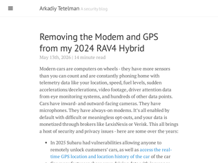
"> Even after the modem is removed, if you connect your phone to the car via Bluetooth then the car will use your phone as an internet connection and send all the same telemetry data back to Toyota. However, if you use a wired USB connection then it does not do that (see the discussion here and elsewhere), so I exclusively use CarPlay via USB.The problem with this is that both carplay and android auto capture their own vehicle telemetry. So even though the car is not able to use your phone as a general data pipe, Google and Apple still get access to this data when you're connected.They are both very cagey with how they talk about this (or don't)."
"Does anyone have any details on this claim? Important: Even after the modem is removed, if you connect your phone to the car via Bluetooth then the car will use your phone as an internet connection and send all the same telemetry data back to Toyota. However, if you use a wired USB connection then it does not do that (see the discussion here and elsewhere), so I exclusively use CarPlay via USB. I wish I had a way to completely disable the car’s Bluetooth functionality, but it’s deeply integrated into the head unit. How can data via Bluetooth be routed to an active internet connection? I assume this would only work if you have the manufacturer's car application installed on your phone.Following the thread linked to, the only thing I can find is very unsubstantiated; https://www.rav4world.com/threads/2019-rav4-dcm-deactivate-p... : One caveat, if you use bluetooth to connect your phone to the car DCM will use your phone to connect to the mother ship and presumably send your data. I only use my iPhone cable to connect to the car which does not have this effect. This sounds like pure speculation, and I would love to hear if there is any information that can substantiate what they are claiming."
"I have the same car and want to do this, but not for the reasons the author noted but because the GPS unit in the car is broken when paired with Carplay and has the wrong compass heading causing navigation to be completely useless.I have reported this to Toyota multiple times with videos detailing the problem and they have denied the problem and ultimately when faced with the evidence simply refused to fix it.I've been a big fan of Toyota's Production System and their management culture, but this experience has really diminished the brand for me. I realize these problems exist with all cars today. The pattern seems to be to foist low-quality hardware and software on their customers and take no responsibility for the results. Software bugs aren't what they consider a "typical car problem" so they simply don't fix them."
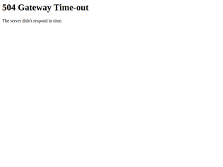
"When announcements say that rewrite took 1 week, I wonder how much time went into preparing this file with very detailed instructions on mapping Zig to Rust idioms: https://github.com/oven-sh/bun/commit/46d3bc29f270fa881dd573...On top of that, if you look at 'Pointers & ownership' and 'Collections' sections, the Bun codebase is already prepared, using internal smart pointer types that map 1-to-1 to Rust equivalents, and `bun_collections` Rust crate already exists.This makes an impression, that rewrite was prepared long time ago and was Bun team proposition to Anthropic during the acquisition deal."
" $ rg 'unsafe [{]' src/ | wc -l 10428 $ rg 'unsafe [{]' src/ -l | wc -l 736 Language Files Lines Code Comments Blanks ━━━━━━━━━━━━━━━━━━━━━━━━━━━━━━━━━━━━━━━━━━━━━━━━━━━━━━━━━━━━━ Rust 1443 929213 732281 116293 80639 Zig 1298 711112 574563 59118 77431 TypeScript 2604 654684 510464 82254 61966 JavaScript 4370 364928 293211 36108 35609 C 111 305123 205875 79077 20171 C++ 586 262475 217111 19004 26360 C Header 779 100979 57715 29459 13805"
"Still writing the blog post about this. Will share more details.For where this is coming from, skim the bugfixes in the Bun v1.3.14 and earlier release notes. Rust won’t catch all of these - leaks from holding references too long and anything that re-enters across the JS boundary are still on us. But a large % of that list is use-after-free, double-free, and forgot-to-free-on-error-path, which become compile errors or automatic cleanup."
"Besides the people in this thread bemoaning the state of research funding, international students, etc. (all of which are valid), a lot of people are becoming disillusioned with academia. Probably 80% of the recent PhD grads I know are looking to leave academia, despite the fact that they went into it to pursue a career in academia. The median science PhD takes 6 years now, and is grueling work for terrible pay, all for difficult job prospects given the current market. MIT recently became one of the first universities to get a grad student union to try and combat the increasingly exploitative nature of academia. I can see how undergrads may look at how AI can do most of their homework assignments, and see how miserable grad students are, and decide that they don't want to continue down that path."
"What a Rorschach blot. Comments range from AI to immigration to doomsday results for USA.The admins statement in TFA speaks more to financial policy and grant declines. Unfunded students are much less likely to accept an admission. That's just a fact of life."
"Academia is about to go through a generational reset. The system is broken and the market only tolerates broken systems for so long.There are a ton of great things that come out of universities but it’s also clear that a model of charging folks well into the six-figures for a useless degree that doesn’t prepare them for the workforce is dead and a reckoning is underway.Many schools will fail and shut down. Of those left they will be much smaller and with tremendous focus on bringing the cost-value equation back to a defensible reality."
"I have been bothering the VM team for years for VM GPU pass through. I worked on the Apple Silicon Mac Pro and it would have made way more sense if you could run a linux VM and pass through the GPU that goes inside the case!Sadly, as you can tell, they have not taken me up on my requests. Awesome that other people got it working!"
"The gaming part is fun, so does the local AI numbers. As fast prefill changes the whole experience, it makes local inference feel practical"
"Excellent article.The game benchmarks are fun but the LLM improvements are where this gets really interesting for practical use. I love Apple platforms as an approachable way to run local models with a lot of RAM, but their relatively slow prompt processing speed is often overlooked.> Here you can see the big issue with Macs: the prompt processing (aka “prefill”) speed. It just gets worse and worse, the longer the prompt gets. At a 4K-token prompt, which doesn’t seem very long, it takes 17 seconds for the M4 MacBook Air to parse before we even start generating a response. Meanwhile, if you strap the eGPU to it, it’ll only take 150ms. It’s 120x faster.The prefill problem goes unnoticed when you’re playing around with the LLM with small chats. When you start trying to use it for bigger work pieces the compute limit becomes a bottleneck.The time to first token (TTFT) charts don’t look bad until you notice that they had to be shown on a logarithmic scale because the Mac platforms were so much slower than full GPU compute."
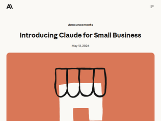
"I'm increasingly convinced that there's a killer app waiting for whoever can come up with a UI that makes claude code or codex accessible to the average user.Onboarding my non-software engineer teammates to it has super-charged them and essentially given them all their own personal developer that can automate tasks for them. Managing codebases, etc. is still a hassle though.90% of the power of Excel was that it was functionally a database that a normal person could actually use. I think we'll see something similar with coding agents."
"You are absolutely right. I shouldn’t have paid that invoice from ScamInc. Would you like me to help you file for bankruptcy?"
"By coincidence, I've looked yesterday a small documentary [1] about the people tagging all those invoices to train theses models. For 120 €/month they are reading about 1000 to 4000 invoices per day and check and tag them for AI training.[1] https://www.arte.tv/en/videos/126831-000-A/arte-reportage/"
"I can't relate that much to this. Every time I use AI to write code, I'm constantly fighting a feeling on the back of my neck that I need to look over everything it has done and supplement/alter it with my own code. That ick feeling counteracts the dopamine hit of having a working app after a few minutes of vibe coding, and I don't think that's going anywhere anytime soon.That said, I have experience. I could absolutely see myself falling into this as a junior or even mid level dev. I'd no doubt not feel that feeling on my neck if it wasn't scarred from code review lashings early in my career by knowledgeable mentors."
"As a developer, I kind of feel like this all smells like job security.After using LLMs for a while, I have to admit it's pretty nice, and I like using it. I've been vibecoding a few apps, and it's a good dopamine hit to immediately see your ideas come to life. However, based on my experience, it will bite you if you trust it blindly. Even in my vibecoded projects, it keeps adding "features" without me asking for them. Since they're just pet projects, I don’t really care as long as the end result is what I'm expecting, but I don’t think companies will be as flexible. I also don't think customers would like it if features changed or got added with every new fix or update.So this could go in a bunch of different directions from here, but to summarize the current situation: A lot of companies are heading in this direction. Without proper engineering, AI will easily write more code and potentially change the application unintentionally. We will have fewer junior engineers entering the market because of fear around AI and reduced hiring. AI usage will hit a critical point where it is making massive amounts of changes, and the people "prompting" it might start getting overwhelmed. We will end up with more features that people have to keep in their heads. I don’t think we can trust LLMs 100%, and because of that, developers will still need to know exactly what the application does. Eventually, there will be a lot of bugs, and developers will complain that we need additional human resources. Hiring starts again. I think, right now, the toughest position is for new developers, and the best position is for people already in the market."
"We talk a lot about the risks of AI in schools, but those same risks apply in any learning environment.I recently started a new job and I find that AI is making it so much harder for me to onboard. I am adjusting to my role much slower than my peers who are using AI less. I am coding in a language I am unfamiliar with, which makes the lure of vibe coding stronger. I am at least skilled enough to recognize when Claude gives me an answer that either makes no sense or is unnecessarily verbose. But the more time I spend asking Claude to write code, the less I feel like I'm developing the skills that the job requires. Plus, when I submit a PR, I lack the necessary confidence in my own work, which just feels bad.Honestly, another part of this is that I'm asking Claude to search through Slack and docs for answers to questions when I should just ask another person. The AI is feeding my social anxiety, luring me into avoiding human contact that I know will be good for my understanding as well as my general need for social interaction.That all sounds like I am absolving myself of responsibility, but I think it's important to point out how a given technology is especially addictive for a certain type of person, and traps them in a negative behavioral cycle. If I hold off on relying on AI now, I suspect I can grow in my skills to the point that I can delegate tasks to AI that are rote and easy for me to verify their results. It feels challenging, but it's necessary."
"> The penalty is a 1-year ban from arXiv followed by the requirement that subsequent arXiv submissions must first be accepted at a reputable peer-reviewed venue.This is incredibly good for science. arXiv is free, but it's a privilege not a right!I'm not seeing this clearly listed on https://info.arxiv.org/help/policies/index.html so it's possible this is planned but not live yet - or perhaps I'm not digging deeply enough?As a certain doctor once said: the whole point of the doomsday machine is lost if you keep it a secret!"
"This has become such a problem in scholarly publishing that we have a business that provides citation checking https://groundedai.company/ that we've been buidling for a couple of years now"
"Seeing the usual LLM hypers angry replying to this on twitter is such a tell. Just like the comments on the LLM poisoning articles, some people just can't accept that some people don't like LLMs and get upset when you put any amount of hindrance to their rapid acceptance."
"This is so exactly right and I've been saying it to whoever will put up with me...(and now am embarrassed I have no link to show for it. oh well, shame is good for writing. envy too!)Software production is now so easy that everything is a .emacs file (pronounced "dot emacs" btw): meaning, each individual has their own entirely personal, endlessly customizable software cocoon. As tptacek says in the OP, it's "easier to build your own solution than to install an existing one" - or to learn an existing one.Another good analogy, not by concidence, is to Lisp in general. The classic knock against it—one I never agreed with but used to hear all the time—is that Lisp with its macros is so malleable that every programmer ends up turning it into their own private language which no one else can read.Tangential to that was Mark Tarver's 2007 piece "The Bipolar Lisp Programmer" which had much discussion over the years (https://hn.algolia.com/?query=comments%3E0%20The%20Bipolar%2...). He wrote about the "brilliant bipolar mind" (BBM) - I won't get into how he introduces that or whether fairly or not, but it's interesting given how "AI psychosis", in both ironic and unironic variants, is frequently mentioned these days.From Tarver's article (https://www.marktarver.com/bipolar.html):The phrase 'throw-away design' is absolutely made for the BBM and it comes from the Lisp community. Lisp allows you to just chuck things off so easily, and it is easy to take this for granted. I saw this 10 years ago when looking for a GUI to my Lisp [...] No problem, there were 9 different offerings. The trouble was that none of the 9 were properly documented and none were bug free. Basically each person had implemented his own solution and it worked for him so that was fine. This is a BBM attitude; it works for me and I understand it. It is also the product of not needing or wanting anybody else's help to do something.Sounds pretty 2026, no? He goes on:The C/C++ approach is quite different. It's so damn hard to do anything with tweezers and glue that anything significant you do will be a real achievement. You want to document it. Also you're liable to need help in any C project of significant size; so you're liable to be social and work with others. You need to, just to get somewhere. And all that, from the point of view of an employer, is attractive. Ten people who communicate, document things properly and work together are preferable to one BBM hacking Lisp who can only be replaced by another BBM (if you can find one).---When production is so easy, consumption becomes the bottleneck [1], and suddenly sharing is a problem. This is why the Emacs analogy is so good. A .emacs file is as personal as a fingerprint. You might copy snippets into yours, but why would you ever use another person's? (other than to get started as a noob). You just make your own.The more customized these cocoons get, the harder they are for anybody else to understand—or to want to. It isn't just that another's cocoon has too high a cognitive cost to bother learning when you can just generate you own. It's also uncomfortable, like wearing someone else's clothes. The sense of smell somehow gets involved.I would call this, maybe not AI psychosis, but AI solipsism.In software it's fascinating how configuration management (that boringest of all phrases) is becoming the hard part. How do you share and version the source? What even is the source? Is it the prompts? That's where the OP heads at the end: "share it somewhere — or, better yet, just a screenshot and the prompts you used to make it." But when I floated a couple trial balloons about whether we might use this for Show HN—i.e., don't just share the code you generated, because that's not the source anymore; instead share the prompts—we got a lot of pushback from knowledgeable people (summarized here: https://news.ycombinator.com/item?id=47213630).These dynamics can only be what's behind the pipe-bursting pressure that Github has been under. What a Github successor would look like is unclear, but as a clever friend points out, there will have to be one. Projects and startups along these lines are appearing, but we seem to be in the horseless carriage phase still.Even more importantly, what happens to teamwork? If we are all a BBM now—or rather, if we all have personal armies of BBMs, locked in a manic state, primed at all hours to generate things for us-and-only-us—how do we work together? How do cocoons communicate, interoperate? What does a team of ai solipsists look like? It sounds oxymoronic.My sense is that a lot of software teams, startups and so on, on the cutting edge of AI-driven / agentic development, are currently contending with this, not (only) philosophically but practically, e.g. how does my generated code compose with your generated code. With these frictions we presumably end up giving back some portion (how much? who can say?) of the productivity gains of generated code [2]. One would expect such effects to show up over time, as the systems being built this way grow in complexity and maintenance/development tradeoffs become things.I don't see many talking about it publicly yet though, which is a pity. No one wants to be the first to stop clapping and sit down during an obligatory standing ovation, but it's a bummer if you can't (yet) tell interesting stories about downsides and instead have to pretend that this is the first free lunch, the only downsideless upside that ever existed. It makes the discussion performative and probably slows evolution, since the experiments, ironically, are happening in silos.These are the people doing the most serious and real and advanced work with the new tools (edit: I mean in the field of software dev), so it sucks if all talk of downsides is left to the cynical/curmudgeonly contingent, who for whatever good points they may, er, generate along the way, are obviously wrong about AI having no value for software dev. It's easier to talk about AI wiping out the human race than, say, bug counts going up or productivity levelling off after a while.Mostly I just want to know what's really going on! and how people are dealing with it and how it is developing over time. Do I have to like go to meetups or something?[1] That's why a recent paper used the title "Easier to Write, Harder to Read" - https://papers.ssrn.com/sol3/papers.cfm?abstract_id=6726702[2] Ran across this saying the same thing, a bit more strongly, the morning after I posted the above. https://x.com/fchollet/status/2054917282015445076. Maybe we'll get the conversation after all!"
"Software that today is overwhelmingly prepackaged and usually professional, which I think at this point the nerds should reclaim:* Podcast apps* Music listening apps* Feed readers* Bluesky clients* Note-taking apps* Desktop bookmarking/read-later apps* Chat and instant messaging* Time trackers* Recipe managersThese are all things that you can get better-than-replacement-grade results from Claude on --- not necessarily the best, not necessarily the most globally competitive, but certainly an application more closely tailored to exactly what you want it to do for your own idiosyncratic work style.Music.app is a miserable experience, and I can just tell as I use it that it's miserable trying to serve me. But Apple long ago factored all the meaningful bits out of Music.app into MusicKit. Why am I still using Music.app? MusicKit is the real product now. This is new."
"Emacs has this property because it uses Lisp. The general tendency for programmers to start writing everything themselves was noted, for Lisp, but was named “The Lisp Curse”¹. It is a curse because programmers stop collaborating. Everyone becomes their own wizard in their own tower, and overall progress stops, and a dark age sets in.1. <https://www.winestockwebdesign.com/Essays/Lisp_Curse.html#ma...>"
"Why payment processors do it? Why people in America do not want to earn more money from commissions? Strong church lobby? Legal risks? I think its mostly religious groups who who are against adult content and sex, or there are other groups?Also this is why we should work to increase circulation of cryptocurrency. No stupid religious restrictions and stupid political sanctions.Also why PornHub and OnlyFans are immune to religious lobby?"
"The left-right coalition against porn makes relief for Kickstarter or Stripe unlikely.FOSTA-SESTA, the law that increased liability for platforms facilitating porn, passed 388-25 in the House and 97-2 in the Senate back in 2018. Every senate Progressive except one voted yes, including Sanders, Warren, Kamala Harris (AG against Backpage), Booker, etc. Anti-trafficking feminist groups like NOW backed that legislation, or were silent on it. Similarly, media outlets were either quiet or in vocal support, i.e., the NYTimes 2020 attack on Pornhub."
""Forced to ban adult content by payment processors"If you go through and click all the links and hunt down the source, the final source underlying it all is a comic author who says, without quoting anything, or any proof, that that's the reason why. Just a random guy saying that Stripe made them ban it, without any evidence.I'm the King of England. There, I guess I "am" the King of England, because all it takes is for a random person to make a statement and it becomes true."
"I was a grad student @ Princeton a handful of decades ago.I was a TA for a few classes and, given the honor code, we did not proctor the exams for undergrads. We just handed them out (left the room) and returned to collect them at the end.- One of the exams in a course that I TAed had 5 free-response questions.- There were also 5 TAs in that class, so we un-stapled the exams and each TA graded one question (for consistency).- We re-assembled the exams and returned them to the students.- A few days after the exam, one of "my" students (she attended my recitation) came to me with her exam and explained that I had incorrectly graded question 2.- I told her that I didn't grade question 2, so she had to go take it up with "TA # 2"- A few hours later, "TA #2" pays me a visit and she (TA#2) is annoyed. She tells me, "Your student is trying to pull a fast one. She answered Q2 incorrectly. She erased her answer and put in the correct answer and she wants it re-graded"- I briefly defended the student and said something like, "Why would she do that... and how could you even know?"- "TA#2" responded with "... because I photocopied all of the student responses after I graded them."- Then I felt like a piece of shit for doubting my fellow TA. And felt even worse being naive enough to not be suspicious.- "TA#2" and I brought all of this info up with the prof. who was running the course.- We were told that the situation would be handled by an Honor Committee or something like that. We forwarded the information to the committee, but no one spoke to us and we were not allowed to participate in the deliberations.- After about a week, all we were told was that the student was able to explain the "discrepancy" between her exam and the photocopy.To this day, I have no idea what that student could have possibly said to explain her actions.After that, I started photocopying every damned scrap of paper that I graded.edits for clarity. The student did not get a zero on the exam, nor was she booted from the course. I don't remember if she was given credit for Question 2, but the TA and I were both expecting her to be tossed, which obviously didn't happen."
"People blame AI but in reality it's more about America transitioning from a high-trust society to a low-trust one."
"Princeton is a strange place. What on earth could be the objection to proctoring? I'd much rather have a proctor than have to narc on a classmate. And even then, the proctor just reports the matter to a student-run body? Wild."
"For the past days I've been participating(albeit over Teams) in a conference relevant to my industry (intel), basically startups and established companies showcasing their products to a closed audience of EU gov. officials.One thing I noticed right away, is that all companies were asked "Can we fully host this from within EU or our country" from the various people in audience. Every single one. Many of the startups had slides prepared for this.Definitely a change, because it is not something I can recall being important just a couple of years ago."
"I started the process of this back in January and now, at least in terms of product hosting; fully migrated into European infrastructure (https://bannermedia.ltd).It didn't come without a bit of pain, but glad I've done it - and to come with this I've ended up building a whole terraform setup for cross provider / cross region high availability within Europe.So far my key mappings included:- Cloudflare -> Bunny CDN (and honestly I am so impressed with Bunny so far)- AWS (or similar) -> Hetzner + OVH; I'm also looking at Civo.com for UK presence.- GitHub -> Forgejo. I do actually still operate in GitHub for development only work, however Forgejo is mirrored within my European private network, and thats where deployment workflows happen.- Google Analytics -> Self hosted Umami.I'll be doing a writeup fairly soon on the entire process."
"While I agree with him that the US is becoming more unpredictable, I don't think the EU is much better, especially with regards to digital things where they can be worse in some ways. For example, they are discussing restricting VPN access for 'child protection'[1][1] https://www.europarl.europa.eu/thinktank/en/document/EPRS_AT..."
"It's maddening that quite a few people are jumping to defend Bambu here.Principally if you sell a device with a certain functionality and you later modify that device later to remove that functionality that is called theft. It does not matter the slightest bit whether you break into someone's house to physically alter the device or whether you remotely install a malicious software update to do that.But what's even more insane here is that some people are claiming that BambooLabs would somehow have the right to do this, because while BambooLab might not have the right to limit the hardware they already sold (which they did and these people just pretend did not happen) they have the right to limit their printer client software under the license conditions they impose on it from the beginning, when their printer client is literally a modification of AGPL licensed software. The entire point of the GPL is to prevent people like BambooLabs from doing exactly this. The AGPL is literally the single license with the most restrictions on BambooLabs to ensure that the users of the software — the customers — do not have any restrictions in what they can do with it.Some people are seeing this situation and just decide to side with the company against their customers on imposing restrictions on an already sold product after the sale and they are literally making shit up to justify it.Edit: For people who do not know what this is about: Someone modified AGPL software to reenable features of these 3D printers that BambooLabs stole after the sale and BambooLabs sent a legal threat to them to stop distributing the software."
"This looks to be a clone of the prior state of the repository that caused all the Bambu drama earlier this week.I did a ton of research because I didn't understand what people wanted here, and this is what's going on:Right now, Bambu have adjusted their system into two modalities:* "default" or "Cloud" mode, where you get an app, remote monitoring, but you have to use Bambu Studio or Bambu Connect to send prints. They implemented this by adding cloud auth to their "internal API;" the client application has to get a token from Bambu's servers, even if the request it eventually makes is a "local" one.* LAN / Developer mode, where the device displays a token and you put it into your app. This disables all of the remote monitoring but in exchange, clients can send prints locally.What users want is to "have their cake and eat it too;" they want the local token authentication _and_ the cloud authentication enabled at the same time. This isn't actually possible, so this plugin approximates it by emulating the interface to the cloud authentication to make the "Bambu Network" cloud RPC calls from a local slicer (one of these calls is a local_print call, so ostensibly this allows you to send prints without running them through the cloud, although with all of the online functionality still enabled and required, this seems like a pretty brave thing to trust).Personally, I find the Bambu reaction distasteful, and there's an argument that the offline mode only exists due to similar outrage, but I don't see the current system as particularly bad and find the appetite to restore "untrustworthy" cloud functionality a bit amusing."
"A lot of the distrust toward Bambu is because they originally announced cloud auth would be required even for printing locally in LAN mode, and only backpedalled on that when they saw the backlash.I'm not sure why their entire domain has been excluded from archive.org but you can still see the original post for now: https://blog.bambulab.com/firmware-update-introducing-new-au...--Critical Operations That Require Authorization The following printer operations will require authorization controls:Binding and unbinding the printer. Initiating remote video access. Performing firmware upgrades. Initiating a print job (via LAN or cloud mode). Controlling motion system, temperature, fans, AMS settings, calibrations, etc."
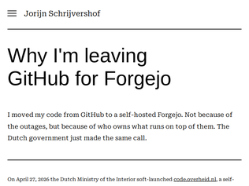
"Everyone seems to be leaving GitHub, and forgetting the entire spirit of what git is in my eyes. Git was always meant to be decentralized, the problem here is that all the tooling around git was centralized to GitHub because it was a cleaner experience, they scaled nicely, and were properly maintained. I would prefer to still see mirrors on GitHub that are auto-synched because I've seen projects for years either self-host or go somewhere niche, then the GitHub mirror dies or is removed, and said projects go poof to the sands of time for one reason or another, completely gone. Everyone seems to be picking some random git host alternative, and some of them are really simple to use.Git is decentralized, GitHub is just another place you can host your code in, but you can push your code to multiple remote servers."
"The real game changer would be completed Federation[1] support. This is why I am donating both Forgejo[2] and Codeberg[3] and urge everyone doing the same, to give more time and resources for the Forgejo team to implement it properly.Another good contender is the Radicle[4][5] which is completely decentralized on top of the Git.[1] https://codeberg.org/forgejo-contrib/federation/src/branch/m...[2] https://liberapay.com/forgejo[3] https://donate.codeberg.org/[4] https://radicle.dev/[5] https://radicle.network/nodes/seed.radicle.dev"
"I have also moved my git repositories to a self-hosted NUC. I have not yet bothered with a HTTP frontend to share it with the world, mostly because I don't want to provide AI scrapers with content and don't want to put the work in to block them.It's a shame that all these companies that benefited from open source have poisoned the industry like this"
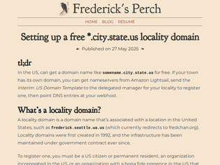
"I have three locality domains, all with different registrars in Oregon. Two are with unique delegated locality domain registrars (think old school consultancies or ISPs that still exist) and one directly via localitymanagement.us (GoDaddy/USTLD).One of the registrars is from an out of state operator that has been dead for three years. I tracked his widow down and had a number of cordial conversations over about 18 months. I've helped his widow renew some personal domains but she's recently told me that she's going to stop paying the hosting bill of the locality registrar and it'll shut down June 1st. I've offered to take over hosting, we'll see if she is convinced.Several other locality users will likely also see their domains disappear once that happens as the USTLD registrar will require a notarized letter from the city/county of that domain to approve any "new" (new in their system) domains. Not easy for any mid or large sized city in the US.I love locality domains clearly, but the bureaucracy applied since the start has piled up over the years.I do worry that this poor Seattle ISP is going to get DDoS'ed by outsider (find an appropriate locality please if you go down this route) due to the popularity of this article, though!RIP Jon."
"Unfortunately the author is correct that you’re pretty screwed if the locality is no longer delegated. I messaged GoDaddy to register one in Boston, they asked for a _notarized_ letter on the local governments letter head approving. No one within the Boston city government knew what their procedure would be, and those willing to say yes didn’t have a notary around. They ended up citing a state law indicating that no locality domains were to be used for _government_ purposes in MA as their reason to say no, when of course that has no bearing on private use…If anyone would like to band together to push city of Boston or Cambridge to start approving these, please let me know! I can revive some email chains."
"This list of (supposedly 7388, didn't realize there even were that many?) of them can apparently now be registered online replacing the email method in the OP: https://localitymanagement.us/registrar/domain/delegatedzone...edit -- seems like the server has been "slashdotted" by this thread, I was finally able to get an account created but can't log in. doesn't seem very well coded anyway since I was apparently able to change the password twice using the same activation link lol."
"At the 1996 ATypI meeting in Den Haag, one of the speakers coined the term “sterotypography” to refer to certain cliches that get used in type usage. Another case of this is the use of Neuland and Neuland Inline to represent Africa, and of course the assortment of faux Chinese fonts that were ubiquitous on Chinese takeout menus in the 80s and 90s (and probably still are, but are there still takeout menus in the era of Grubhub?)."
"Does the Back To The Future logo really count? Raiders of the Lost Ark as a very similar style but does not evoke "future". Yes, there are subtle differences. My point is, if you divorced them from the connection to their content I think it would be hard to point to one as "future" and the other as "not future""
"Needs a (2016)> Posted on February 18, 2016 by Dave AddeyGreat read otherwise, I know the author mentions their book, I do wonder if he covers the history of how these fonts came to be so standard... for future stuff"
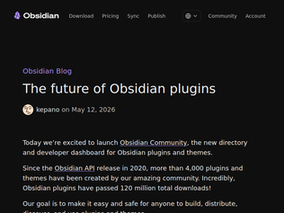
"Obsidian CEO here. We've been working for nearly a year to launch this new Community site and review system. I'm very excited about this first version but there are many more improvements to come.I've tried to be exhaustive with the blog post, FAQs, and next steps on our roadmap, but I am sure I forgot some things, so feel free to ask!This has been an incredibly challenging project for a number of reasons. We're only seven people but we have thousands of plugin developers and millions of users. There are many competing priorities to balance.We wanted to make sure the new system would be easy to adopt, backwards compatible, and not completely break people's workflows, while still being a major improvement over the old approach, and allow us to gradually continue enhancing security and discoverability of plugins.Consider it a work in progress. We're listening to everyone's ideas and gripes, and will keep iterating :)"
"For those not aware, it has basically been impossible to submit new plugins due to the manual review (and how easy/fun it is to write a plugin with AI). The developer community was becoming increasingly frustrated, and the team was burning out under the load.So congrats to the team! This relieves a huge scaling bottleneck. It has been really cool to see how y'all build and scale."
"I want an Obsidian where I can: - Specify network requests on/off from plugins - Don't allow file access outside the vault - Don't allow external binary execution.Most of the reviews are not required if this is enforced."
"Am I correct that this has come about because archive.org respects robots.txt and these sites have blocked their crawler from indexing their sites?I'm not sure how to articulate my thoughts on this exactly, other than to say it's disappointing that doing the right thing (i.e. respecting robots.txt) is rewarded with the burden of soliciting responses to a petition while at the same time others are rewarded with profit for ignoring those same directives."
"I think the problem is that when Archive.org has access to NYT and other publisher content, people can scrape NYT content at scale from Archive.org even when they cannot do so directly on NYT. If Archive.org blocks scrapers, maybe the publishers would make different choices and allow Archive.org access."
"Idea: allow scraping but can’t publish for 1 year?"
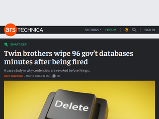
"> [Opexus] said that “the individuals responsible for hiring the twins are no longer employed by Opexus.”Getting close to the classic Monty Python line: "Those responsible for sacking the people who have just been sacked, have been sacked."Jokes aside, stuff like this sucks because I suspect many employers will take from it the most extreme, dehumanizing lessons, e.g.: (a) make firings [edit: including lay-offs] as abrupt as possible including terminating all access immediately, (b) never give second chances to anyone with any sort of criminal record (even say decades old marijuana posession or something).I'd prefer a more balanced version: limit unilateral access to sensitive systems in general (not just of recently-fired employees), when someone is fired immediately shut off particularly sensitive credentials if they do exist (but not their general-purpose login/email account), avoid hiring people convicted of wire fraud as sysadmins, hash your @!#$ing passwords, etc."
"> At 4:58 pm, he wiped out a Department of Homeland Security database using the command “DROP DATABASE dhsproddb.”This article is hilarious. The two bickering brothers remind me of the guys in the Oceans movies played by Casey Affleck and Scott Caan. It’s amazing they got this close to sensitive data."
"> On March 12, 2025, a search warrant was executed at Sohaib’s home in Alexandria. Agents grabbed plenty of tech gear but also turned up seven firearms and 370 rounds of .30 caliber ammunition. Given his former crimes, Sohaib should have had none of this.For god's sake, don't commit crimes while you're committing crimes."
"It's great except the war is obviously for Israel not oil, we had more access to oil before the war"
"Wow - the writing in this is fantastic. This is genuinely hilarious!"
"Why was this removed from the front page? It was number one just a couple minutes ago"
"I was just wishing something like this existed last week. What timing.I'm piping sensor readings into duckdb with a deno server, and couldn't use duckdb -ui to look over the data without shutting down the server. I had no interest in using the server to allow me to look at the contents of the db, so I was just going to live with it for now. This perfectly solves that, along with several other similar kinds of problems I've encountered with duckdb.duckdb is my favourite technology of 2025/26. It has worked its way into so many of my workflows. It's integral to how I work with LLMs, how I store all kinds of data, analytics, data pipelines... I love it."
"This is rad. I've been eyeballing using DuckDB in my firm's internal app framework and this just solved the "but how do I horizontally scale this" problem. Kudos to the DuckDB folks. Love "Quack" for the protocol name, too."
"Been working on open-source projects involving storing and querying observability data (metrics, logs, traces) in parquet[0] and have been frustrated with the usability of Apache Iceberg … despite strongly agreeing and wanting to use an open storage format and catalog.This makes Ducklake much more interesting for my use case, excited where this is going.[0] https://github.com/smithclay/duckdb-otlp"
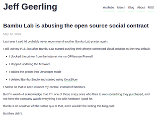
"Full disclosure: I've never owned a Bambu because I've never loved the idea of a "closed" ecosystem 3D printer, however I have used them, and am very familiar with the 3d printing space beyond Bambu.For anyone considering alternatives: You should know that almost all other 3D printers expect you to know a little more about how they actually work than Bambus. Bambus are as close as you can get to a "just works" type experience, but modern alternatives from others are nowhere near as hard as they used to be.The closest "easy" alternative is probably Prusa, but you'll pay significantly more for a Prusa machine than you would a Bambu. They're an excellent company, and the complete opposite of Bambu when it comes to Openness. If money is no object, Prusa is highly recommended.Beyond Prusa, there's a lot of other options. https://auroratechchannel.com/#section2 This list is a good one.I personally run an old Elegoo Neptune 4 pro - but my needs are quite low. If I were buying today, a Snapmaker U1 or the Creality K2 Plus is probably where I'd end up going."
"This sentence in Bambu Lab's blog post is wild:> We have documented incidents of service outages caused precisely by spikes in unauthorized traffic - overwhelming the servers, causing service disruptions affecting everyone. The cost was instability felt by all users.So it's a problem that their printers are popular, and they can't be bothered to scale their infra, so let's gate everything based on USER AGENT STRING! This is so crazy of an excuse that I don't believe it."
"Funny how fast people forget. LAN mode was NOT part of their original plan until outrage like this happened last time. They shifted their course and changed their blog post after. Putting pressure as a customer is how you steer company’s direction."
"So, I'm only slightly trying to be a smartass here, but... Who is this for? They are marketing what is ostensibly a computer for people who seem to not want to use a computer in scenarios that I don't think even exist.Beyond that, this is a laptop that is running a really shitty, 'apps only, no you cannot do anything useful with this' operating system. I have an awful lot of complaints about MacOS's relatively restrictive use cases, but it's still at least a General Purpose OS. Android on laptop is very much not.This is an overgrown phone with all the trash that comes with a phone, and the very finite use cases that come with a phone, only now it has a keyboard. It's solving none of the problems with Android as an operating system and doesn't seem to even be interested in doing that anyway. The marketing is demoing use cases that don't even exist.So I repeat my question: Who is this for?"
"I see the vision here, which the top commenters (sorry, couldn't read all of them) seems to miss. This should be a moonshot bet on the next generation of user experience. People are complaining about apps, but the idea here should be to make apps irrelevant as a concept. You don't need "apps", you need data feedable to LLM and a visualization toolkit for presenting results. And maybe some tools to manually wrangle the data when precise manipulation is required.On paper, this sounds amazing. Like "out of sci-fi books" amazing. The caveat, though? I very much doubt Google has the capacity to execute this properly. And we'll get another half-baked attempt at reskinning Chromium and/or Android."
"So this is essentially Android desktop mode with Android 17 Gemini integration. Please get rid of that top panel. I just don't get why this and desktops like GNOME tries to copy macos top panel when clearly in macos it is menu bar that host app menus but that concept doesn't exists in these other desktops and yet they have a top panel. This is just bad UX.This will follow same model as Chromebooks i.e different devices from different OEM partners and for x86 and arm. So soon someone will be able to create a generic ISO for this that you can boot on a standard x86 PC/laptop.Samsung is also working on such devices but they will probably have Dex which is much better then the current Android desktop mode."
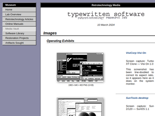
"You might be looking at these old Unix GUIs thinking they're shit compared to now, but actually, at the time, they were shit too."
"Invisible scroll bars are a source of constant annoyance. And it sometimes takes me several attempts to move a window, because of all the various clickable things without visible boundaries. Frustrating."
"Amazing walk through memory lane, and super useful. One big omission though - starting in the early 1990s, we should be seeing some Linux desktops in there, but I didn’t see any through 1995 or so when I stopped browsing. Also, Irix would be nice to get — although I don’t recall if SGI had much in the way of custom vibes for their window managers, they certainly had amazingly cool 3D demos.A nice vibe coding project here would be to show these in a carousel with the UI being 1:1 pixels. It’s hard to understand just how different NeXTStep (Did I capitalize that correctly?) felt from Windows — part of it was refresh rates, but part of it was going from 800x600 to 1132x800-ish on the monitor. Color, refresh rates, monitor quality, a cool plastic color and design for the box were all part of the experience."
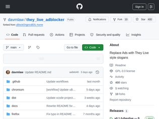
"Misread the title to mean that They Live inspired the concept of adblocking in general. Which would have been an interesting coincidence, since it did inspire one of the early Mozilla logos. [0][0] https://www.jwz.org/blog/2016/10/they-live-and-the-secret-hi..."
"I wish I could upvote this 10 times! I love the film - blew my mind when I saw it on cable just after it came out."
"Back in the late 90s I stood up a webserver in my office that returned fake banner ads for 404's. I used the in-house DNS server to vector "*.doubleclick.net" over to it.We'd get amusing banner ads for things like cocaine-based nasal spray, renting pigs, and other vaguely off-color things in place of real ads. It was very, very amusing. I didn't tell anybody I was doing it and got some real laughs when people submitted helldesk tickets asking about the ads.It got the axe when a technician printed some Mapquest directions that included off-color ads and left them laying around at a Customer site.Aside: The fake ads came from a website called "Bannertown", (if memory serves). I believe it's long-since defunct. I'd love to find the ads today. They were very amusing."
"I'll give you the cheat sheet:- Good design is a single idea pervaded throughout.- More generally, your goal should be to minimize surprise.- If your system allows it, people will do it.- Everyone will not just. If your solution starts with "if everyone will just..." then you don't have a solution.- Isolate the parts of your system that transform data from the ones that use it. Data models outlive code.- Coupling is the root of most evil.- Versioning is inevitable.- Make state explicit.- Every piece of information should have a single source of truth.- You should spend more time thinking about naming things correctly.- If testing is difficult, the design is wrong.- You will regret every undocumented decision.- Communication is a tax that you should justify before paying it.Remember that the job of an engineer at any level is to use rules of thumb to solve problems for which there is incomplete information."
"The recommendations are often very good, for example Ousterhouts A Philosophy of Software Design, but seem to be on software development in general, not actually software architecture in particular.For that, I would recommend the classic texts, such as Software Architecture: Perspectives on an Emerging Discipline (Shaw/Garlan) and really anything you can find by Mary Shaw. Including more recent papers that explore why the field of software architecture did not go the way they foresaw, for example Myths and Mythconceptions: What Does It Mean to Be a Programming Language, Anyhow? or Revisiting Abstractions for Software Architecture and Tools to Support ThemMore practically: look at why Unix pipes and filters and REST are successful, and where they fall down and why. Hexagonal architecture is also key.And a plug for my own contribution, linking software architecture with metaobject protocols as a new foundation for programming languages and programming: Beyond Procedure Calls as Component Glue: Connectors Deserve Metaclass Status. An answer to Mary Shaw's Procedure Calls Are the Assembly Language of Software Interconnection: Connectors Deserve First-Class Status.Answering the question: if procedure calls are the assembly language, what might a high level language look like? And also maybe that software architecture might have a brighter and more practical future ahead of itself."
"The best way to learn architecture is to:1. Maintain a large enough project. Not create, but support.2. Do it for at least couple or few projects.If project is too small, any architecture works fine. "Large" can be in terms of lines of code, but better in terms of people who ever worked on it, or even better -- teams.At least two different projects is to have something to compare. I've seen people stuck for decades on one project and not knowing any modern ways to solve a problem.But often the architects who get promoted because they created, not maintained a project. Especially visible in Google, as you don't get promoted for maintaining anything, only for shipping something new (and better jumping off as soon as possible afterwards).Counterintuitively, people in the best position to be architects are actually side contractors from head shops, who get invited to maintain an existing project no one from a company is willing to (as they all jumped off where promotions go). First, they have to maintain an architecture, and second they did it on several projects, so can compare. The downside though, is if they bill by the hour, the tend to over-complicate architecture to bill more hours."
"Because the most important parts of the expertise are coming from their internal "world model" and are inseparable from it.An average unaware person believes that anything can be put in words and once the words are said, they mean to reader what the sayer meant, and the only difficulty could come from not knowing the words or mistaking ambiguities. The request to take a dev and "communicate" their expertise to another is based on this belief. And because this belief is wrong, the attempt to communicate expertise never fully succeeds.Factual knowledge can be transferred via words well, that's why there is always at least partial success at communicating expertise. But solidified interconnected world model of what all your knowledge adds up to, cannot. AI can blow you out of the water at knowing more facts, but it doesn't yet utilize it in a way that allows surprisingly often having surprisingly correct insights into what more knowledge probably is. That mysterious ability to be right more often is coming out of "world model", that is what "expertise" is. That part cannot be communicated, one can only help others acquire the same expertise.Communicating expertise is a hint where to go and what to learn, the reader still needs to put effort to internalize it and they need to have the right project that provides the opportunity to learn what needs to be learnt. It is not an act of transfer."
"As a /senior/ developer I really dislike blanket statements. I've seen the same amount of failures caused by> “Do we really need that?” > “What happens if we don’t do this?” > “Can we make do for now? Maybe come back to this later when it becomes more important?”as with experimenters. Every system is different, every product is different. If I were building firmware for a CT scanner, my approach towards trying out new things would be different than a CRUD SaaS with 100 clients in a field that could benefit from a fresh perspective.There are definitely ways to have eager/very open seniors drive systems into hard to get out corners. But then there are people that claim PHP5 is all you need."
"Most proof of concepts I've seen get traction turned into production.A rewrite?I recall a few times everyone promised, if this gets promoted then we will rewrite it from zero. Never happened.The article touches on responsability, accountability. There is none for risk taker. By definition. You have a crazy idea, you rush it out, you hope clients bite. You profit. It's not even your problem how to make it work, scale, not cost more to run than we sell it for.The loop on the right. There are companies, two of them are very popular these days, they took it to an extreme. You ship something fast, and since it only scales linearly you go raise money. Successful companies, countless users, some of them even pay. Who's to blame? The senior developer, or simply someone reasonable who asks, how's that sustainable, what's the way out of this? Those are fired, so whoever's left is a believer."
"This is pretty easy to solve. If you present data by algorithm, you are no longer an impartial common carrier and are liable for the content you present. If the user decides you don’t, ala social media 1.0."
"I don’t think this is only a kids issue.A lot of adults need this too. The addictive apps are very well designed, while most blockers are either too easy to ignore or too annoying to keep using.I built a small iOS blocker because I had the same problem. Making it strict enough to actually work without making people hate it is the main challenge."
"Tell me: why are these algorithms suddenly okay when the victim turns 18?They are bad for everyone and if you’re willing to regulate them, make them illegal to be used on anyone."
"I saw this a while ago so it might not be totally related, but Sebastian Lague did a video on atmospheres for his planet generation experiment which was also very entertaining to watch [1].There's something particularly entertaining on developing visuals and watching them come a reality — I hope at some point be able to experiment in this field.[1] https://www.youtube.com/watch?v=DxfEbulyFcY"
"I'm not sure if it was a deliberate omission or not, but it's worth pointing out in the Sunset model that the sky should not go black as soon as the Sun goes below the horizon as it does in the demo. The Sun will still be shining on the atmosphere above you, and in areas above your horizon for a considerable time after Sunset. There will still be a noticeable twilight (in Earth's atmosphere) until the Sun is 18 degrees below the horizon. It's probably not practical to implement using ray tracing, but there are common algorithms to model it."
"Incredible what mobile phones and browsers can do nowadays. I remember implementing this paper from 1993 (the absolutely OG for this topic and very readable): “Display of The Earth Taking into Account Atmospheric Scattering” by Nishita et al: https://www.researchgate.net/publication/2933032_Display_of_..."
"My understanding was that strokes caused brain cell death, and that there was no coming back from that, but my neurologists would speak of 'bruised' brain cells, and that after weeks or months or even years you can see recovered function. UCLA's work here is targeting this disconnection and the lost rhythm in the surviving, distant networks. However there is, as yet, NO concievable intervention that could recover function from cell death at that center of the infarct."
"If you've read Ted Chiang's "Understand," you'll understand why this headline made my eyes pop out. For those who haven't, it's in the "Stories of Your Life and Others" collection, which includes the short story that the film Arrival was based on."
"> This type of neuron helps generate a brain rhythm, termed a gamma oscillation, which links neurons together so that they form coordinated networks to produce a behavior, such as movement. Stroke causes the brain to lose gamma oscillations. Successful physical rehabilitation in both laboratory mice and humans brought gamma oscillations back into the brain and, in the mouse model, repaired the lost connections of parvalbumin neurons.>Carmichael and the team then identified two candidate drugs that might produce gamma oscillations after stroke. These drugs specifically work to excite parvalbumin neurons.Asking while being total layperson here - can we generate those gamma oscillations by an [may be implanted] electronic device?Edit: and google search to help, judging by the dates seems to be a pretty fresh field :https://journals.plos.org/plosbiology/article?id=10.1371/jou..."... by pairing robotic rehabilitation with a clinical-like noninvasive 40 Hz transcranial Alternating Current Stimulation, we achieved similar motor improvements mediated by the effective restoring of movement-related gamma band power, improvement of PV-IN maladaptive network dynamics, and increased PV-IN connections in premotor cortex. "It also sounds like getting an exoskeleton for such patients can be helpful not only to perform immediate tasks, it also can be a part of the restoring process."
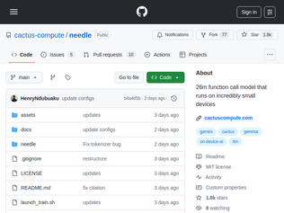
"Do you have any examples or data on the discriminatory power of the model for tool use?The examples are things like "What is the weather in San Francisco", where you are only passed a tool like tools='[{"name":"get_weather","parameters":{"location":"string"}}]', I had a thing[1] over 10 years ago that could handle this kind of problem using SPARQL and knowledge graphs.My question is how effective is it at handling ambiguity.Can I send it something like a text message "lets catch up at coffee tomorrow 10:00" and a command like "save this" and have it choose a "add appointment" action from hundreds (or even tens) of possible tools?[1] https://github.com/nlothian/Acuitra/wiki/About"
"Hmm.. this might make it feasible to build something like a command line program where you can optionally just specify the arguments in natural language. Although I know people will object to including an extra 14 MB and the computation for "parsing" and it could be pretty bad if everyone started doing that.But it's really interesting to me that that may be possible now. You can include a fine-tuned model that understands how to use your program.E.g. `> toolcli what can you do` runs `toolcli --help summary`, `toolcli add tom to teamfutz group` = `toolcli --gadd teamfutz tom`"
"Are you worried about Google's response to this? Google reportedly reacts to distillation attempts "with real-time proactive defenses that can degrade student model performance". So if they detected you, they could have intentionally fed you a dumber but plausible variant of Gemini: https://cloud.google.com/blog/topics/threat-intelligence/dis...But also, this model is small and just focusing on the tool use. In terms of token usage, you're probably not anywhere near the people that are trying to distill the entire model."
"Yep. The only people I've heard saying that generated code is fine are those who don't read it.The problem is that the mitigations offered in the article also don't work for long. When designing a system or a component we have ideas that form invariants. Sometimes the invariant is big, like a certain grand architecture, and sometimes it’s small, like the selection of a data structure. You can tell the agent what the constraints are with something like "Views do NOT access other views' state" as the post does.Except, eventually, you'll want to add a feature that clashes with that invariant. At that point there are usually three choices:- Don’t add the feature. The invariant is a useful simplifying principle and it’s more important than the feature; it will pay dividends in other ways.- Add the feature inelegantly or inefficiently on top of the invariant. Hey, not every feature has to be elegant or efficient.- Go back and change the invariant. You’ve just learnt something new that you hadn’t considered and puts things in a new light, and it turns out there’s a better approach.Often, only one of these is right. Often, at least one of these is very, very wrong, and with bad consequences.Picking among them isn’t a matter of context. It’s a matter of judgment, and the models - not the harnesses - get this judgment wrong far too often. I would say no better than random chance.Even if you have an architecture in mind, and even if the agent follows it, sooner or later it will need to be reconsidered. What I've seen is that if you define the architectural constraints, the agent writes complex, unmaintainable code that contorts itself to it when it needs to change. If you don't read what the agent does very carefully - more carefully than human-written code because the agent doesn't complain about contortious code - you will end up with the same "code that devours itself", only you won't know it until it's too late."
"I've set a few rules for working with coding agents:1. If I use a coding agent to generate code, it should be something I am absolutely confident I can code correctly myself given the time (gun to my head test).2. If it isn't, I can't move on until I completely understand what it is that has been generated, such that I would be able to recreate it myself.3. I can create debt (I believe this is being called Cognitive Debt) by breaking rule 2, but it must be paid in full for me to declare a project complete.Accumulating debt increases the chances that code I generate afterwards is of lower quality, and it also feels like the debt is compounding.I'm also not really sure how these rules scale to serious projects. So far I've only been applying these to my personal projects. It's been a real joy to use agents this way though. I've been learning a lot, and I end up with a codebase that I understand to a comfortable level."
"When it was Copilot tab-completing lines, people would say, "yea, but you still have to make sure you're the one writing the whole functions".Then when it was completing functions, people would say, "yeah, but you still have to make sure you're the one writing the logic around the functions"Then when it was completing the logic around the functions, people would say, "yeah, but you still have to make sure you're the one writing the features"Now it's completing features and people say, "yeah, but you still have to make sure you're the one writing the architecture"I don't know if architecture is a solvable problem for these models, but it is interesting watching the expectations moving over time."
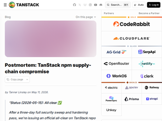
"Please be careful when revoking tokens. It looks like the payload installs a dead-man's switch at ~/.local/bin/gh-token-monitor.sh as a systemd user service (Linux) / LaunchAgent com.user.gh-token-monitor(macOS). It polls api.github.com/user with the stolen token every 60s, and if the token is revoked (HTTP 40x), it runs rm -rf ~/.https://github.com/TanStack/router/issues/7383#issuecomment-..."
"What I want to focus on is mental model of your CI pipeline, and problem with too much YAML, consider this quote:> Cache scope is per-repo, shared across pull_request_target runs (which use the base repo's cache scope) and pushes to main. A PR running in the base repo's cache scope can poison entries that production workflows on main will later restore.This is very difficult to understand, and teach to new people, because everything is configured as YAML, yet everything is layed out in the background to directories and files.What if your CI pipeline was old-school bash script instead? This would be far more obvious to greater amount of people how it works, and what is left behind by other runs. We know how directories and files work in bash scripts.Could we go back to basics and manage pipelines as scripts and maybe even run small server?"
"It is unfortunate, but this is evidence (IMO) that Trusted Publishing is still ~~not secure~~ not enough by itself to securely publish from CI, as an attacker inside your CI pipeline or with stolen repo admin creds can easily publish. This isnt new information, TP is not meant to guarantee against this, but migrating to TP away from local publish w/ 2fa introduces this class of attack via compomise of CI. (edit: changed "still not secure" to "still not enough by itself" bc that is the point I want to make)Going to Trusted Publishing / pipeline publishing removes the second factor that typically gates npm publish when working locally.The story here, while it is evolving, seems to be that the attacker compromised the CI/CD pipeline, and because there is no second factor on the npm publish, they were able to steal the OIDC token and complete a publish.Interesting, but unrelated I suppose, is that the publish job failed. So the payload that was in the malicious commit must have had a script that was able to publish itself w/ the OIDC token from the workflow.What I want is CI publishing to still have a second factor outside of Github, while still relying on the long lived token-less Trusted Publisher model. AKA, what I want is staged publishing, so someone must go and use 2fa to promote an artifact to published on the npm side.Otherwise, if a publish can happen only within the Github trust model, anyone who pwns either a repo admin token or gets malicious code into your pipeline can trivially complete a publish. With a true second factor outside the Github context, they can still do a lot of damage to your repo or plant malicious code, but at least they would not be able to publish without getting your second factor for the registry."
"Quote:"My personal conclusion can however not end up with anything else than that the big hype around this model so far was primarily marketing. I see no evidence that this setup finds issues to any particular higher or more advanced degree than the other tools have done before Mythos. Maybe this model is a little bit better, but even if it is, it is not better to a degree that seems to make a significant dent in code analyzing."It's a good reminder for us all that the competition in this space is rough and lots of more or less subtle marketing is involved."
"> An amazingly successful marketing stunt for sure.This. Well done by Antropic.It even reached the CISO of my small semi-government org in the Netherlands, who slightly panicked at the announced 'tsunami' of vulnerabilities that was coming with Mythos.Got us some more money and priority with the board, though.Never waste a good marketing scare."
"If an AI agent finds zero bugs in a software utility, how can that be viewed in the sense the AI agent is not very good at finding bugs?What if there are actually zero bugs?> Five issues felt like nothing as we had expected an extensive list.The expectation here may not match reality, but not necessarily because Mythos isn't as capable as claimed. curl may just happen to be a well-hardened tool that doesn't have too many security vulnerabilities in its present state."
"A couple of comments here mention using this in VR. Fwiw, years back I played a bit with shallow-3D UIs for software dev. Shallow like within a few cm of a laptop display, to minimize VAC eye strain for all-day use. Think more being able to layer and draw in color, but in 3D, rather than waving arms in a room.The 3D can be wiggle 3D, or perspective from webcam head/eye tracking, or stereo from shutter glasses, or XR HMDs. Wiggle is easiest - just move the object orientation back and forth. Cute but distracting. Well, cross/parallel-eye gaze is easier, but limited - ok for little UI test swatches. Perspective is more subtle, less intrusive. Can be simple with a head tracker driving a single orientation, or go all in with eye pose (for distance) and window locations, to do an accurate 3D render. App stereo pairs can be "I give you two windows Left/Right-eye", or "alternating L/R view, labeled/synced/polled". Other possibilities. Many of these need window system/manager/desktop support. I found a lot of leverage in using a stack of electron and X.It's fun to displace text in 3D. Like colorization, but more so. And if you don't mind a cluttered appearance, you can add secondary information layers segregated by depth. And... etc. Emacs with characters-have-a-depth finally gets you something LispMs didn't have. Fun aside, to explore possibilities with code text, with anything not inherently 3D, far easier to prototype UX with fg/bg colors, fonts, unicode, and animation. Or in browser, overlaid divs and transparent 2D/3D canvases."
"UNIX still trying to catch up with Xerox workstations in the REPL experience, or general Lisp machines for that matter.Inline graphics from 1981,https://youtu.be/o4-YnLpLgtk?t=376"
"I like this. No reason the terminal should only support text. Data science notebooks show one way the terminal can evolve. Lots of interesting stuff happening in this space, with Kitty probably being the most aggressive innovator here [1]. I'm not sure there is an overall vision, though.[1]: https://sw.kovidgoyal.net/kitty/protocol-extensions/"
"People complain a lot about Gmail, but honestly I kind of understand Google's plight here.They've essentially gotten roped into maintaining a huge chunk of internet infrastructure, for free. If they ever shut it down the whole world would end up rioting because it's so widely used.But it's expensive, complicated and time-consuming to maintain - and both a source of and recipient of endless waves of spam and scams. It's an endless pile of data to hold onto, FOREVER, as well.I enjoy hating on Google when appropriate. But when it comes to Gmail, I understand what they're dealing with.It's honestly why I believe the idea of free e-mail is just bad, fundamentally. You can't expect a free e-mail service to be good or have any kind of support. The fact that it still exists is more out of shear fear of the repercussions than any good will on the owner's part.Just get a paid e-mail service. They're better, and offer a lot more peace of mind."
"Any Gmail person can tell me why Gmail is tolerating Gmail phishing emails that use Google's own services (e.g. https://storage.googleapis.com/savelinge/... ?More info here: https://news.ycombinator.com/item?id=46665414"
"> Supposedly, using the QR code on the smartphone triggers an SMS sent from your phone to Google in order to verify your phone number.Does anyone have a better source of information than this one forum comment from someone who thinks scanning a QR code is enough to get your phone to send a text message?EDIT: It’s just an SMS URI. It doesn’t automatically send anything, just opens a text message for you to send.This is just the old phone number verification with a QR code convenience method."
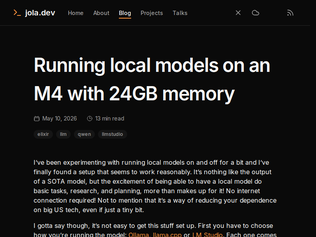
"Getting so close to good!I consider Gemma 4 31B (dense / no MoE), the new baseline for local models. It's obviously worse than the frontier models, but it feels less like a science experiment than any previous local model I’ve run, including GPT OSS 120B and Nemotron Super 120B.On my M5 Max with 128 GB of RAM and the full 256K context window, I see RAM use spike to about 70 GB, with something like 14 GB of system overhead. A 64 GB Panther Lake machine with the full Arc B390, or a 48 GB Snapdragon X2 Elite machine, could probably run it with a 128K to 256K context window. Maybe you can squeeze it into 32GB (27.5GB usable) with a 32K context window?Even last year, seeing this kinda performance on a mainstream-ish/plus configuration would have seemed like a pipe dream."
"I could have used this article before I spent the weekend arriving to the same conclusion!Same laptop, and my contrived test was having it fix 50 or so lint errors in a small vibe-coded C++ repo. I wanted it to be able to handle a bunch of small tasks without getting stuck too often.GPT OSS 20B was usable but slow, and actually frequently made mistakes like adding or duplicating statements unnecessarily, listing things as fixed without editing the code, and so on.Qwen 3.5 9B with Opencode was much faster and actually able to work through a majority of the lint warnings without getting stuck, even through compaction and it fixed every warning with a correct edit.I tried 4bit MLX quants of Qwen 3.5 9B but it eventually would crash due to insufficient memory. I switched to GGUF, which I run with llama.cpp, and it runs without crashing.It is absolutely not comparable to frontier models. It’s way slower and gets basic info wrong and really can’t handle non trivial tasks in one go. I asked it for an architecture summary of the project and it claimed use of a library that isn’t present anywhere in the repo. So YMMV, but it’s still nice to have and hopefully the local LLM story can get much better on modest hardware over time."
"> The longer you let it drive without constraints, the worse the wreckage gets. The velocity makes you think you're winning right up until the moment everything collapses simultaneously.In my experience (so far), I can’t let the LLM write too much in one go.I need to test the hell out of what it gives me, and I can’t ask for too much, at one time.I tend to ask it to “flesh out” functions, where I have a signature, and a detailed headerdoc comment. I will provide a lot of guidance about the context, often attaching relevant files.Even then, it often doesn’t give me what I need, first time, unless it’s a small function, with extremely limited scope.That said, it’s been extremely helpful. It has accelerated my development greatly.I have found that it gives me much better PHP, than Swift.I suspect that may be because PHP is extremely mature, and there’s millions and millions of lines of high-quality code out there, in open-source repos, while Swift is probably mostly in closed repos, with open stuff not really provided by experienced developers (it’s a proprietary language used for shipping commercial software, so that may also apply to other languages).What it gives me in Swift, most closely resembles stuff that enthusiastic newer folks would do, and want to show off."
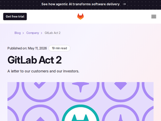
"https://www.google.com/search?q=gitlab+stock shows their stock price was ~$52 a year ago and is $26 today, so down 50% in 12 months. It's quite possible this is because they weren't making enough noise about their AI strategy.If investor fears are that AI makes GitLab's business less valuable, including this in their "GitLab Act 2" announcement makes a whole lot of sense:> The agentic era multiplies demand for software. Software has been the force multiplier behind nearly every business transformation of the last two decades. The constraint was the cost and time of producing and managing it. That constraint is collapsing. As the cost of producing software collapses, demand for it will expand. Last year, the developer platform market used to be measured in tens of dollars per user per month, this year it is hundreds/user/month and headed to thousands. Not only is the value of software for builders increasing, but we believe there will be more software and builders than ever, and we will serve an increasing volume of both.Wrote a bit more about this on my blog: https://simonwillison.net/2026/May/11/gitlab-act-2/"
"Lots of interesting information here:>The agentic era affords GitLab the largest opportunity in our history as a company, and we're making the structural and strategic decisions to meet it>Operationally, we grew into a shape that was right for the last era and isn't right for this oneTo meet their largest opportunity ever, they believe they need less resources. I'm not sure I understand how that follows.>We're rewiring internal processes with AI agents, automating the reviews, approvals, and handoffs to speed us upIs this also in the list of "we create code twice as fast and the bottleneck is review so YOLO no bottleneck?". I've yet to see a convincing justification for this. If anything, if you're going full throttle all the more reason to watch the steering wheel, no?That said, 8 layers of management is a lot of management, and every line of the message seems like leadership truly believes they are sinking in bureaucracy. Let's see how unneeded those 3 layers they're cutting were."
"After CVE-2023-7028 (account takeover via password reset, IIRC you just had to add a semi-colon between the correct email and the attacker email and it'd email both) was exploited against my cluster, the boasting about fully-automated changes and reviews scares me. I hope I'm far from the only one that hasn't forgotten issues like this.I'm aware that the defective code was not written by AI but nonetheless, GitLab is what stands between many small organizations and their most precious resources. I was fortunate that 2FA stopped the damage, but what's going to happen the next time? What if my organization is permanently damaged because we taught the machines to go fast and break things, too [1]?[1] VPN is an option but we're a non-profit with a number of non-technical users, so admittedly we're caught in a balance between making it harder to do things. As much as WireGuard is awesome, there's still a barrier."
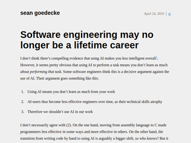
"Multiple times per week I have the same conversation. It goes something like this: - AI will make developers irrelevant - Why? - Because LLMs can write code - Do you know what I do for a living? - Yes, write code? - Yes, about 2-5% of the time. Less now. - But you said you are a developer? - I did - So what do you do 95-98% of the time? - I understand things and then apply my ability to formulate solutions - But I can do that! - So why aren't you? The developers who still think their job is about writing code will perhaps not have a job in the future. Brutal as it may sound: I'm fine with that. I'm getting old and I value my remaining time on the planet.Business owners who think they can do without developers because they think LLMs replace developers are fine by me too. Natural selection will take care of them in due course."
"In my experience, it's been the complete opposite. The very experienced engineers that are actually willing to use top of the line tooling are much better than they were before, including those that are over 40, and over 50.Part of the practical degradation of traditional programmers over time has always been concentration and deep calculation, just like in chess. The old chess player knows chess much better than a 19 year old phenom, but they cannot calculate for that many hours at the same speed as before, so their experience eventually loses to the raw calculation. Maybe at 35, or at 45, but you are just not as good. Claude Code and Codex save you the computation, while every single instinct and 2 second "intuition", which is what you build with experience, is still online.It's not just that it's a more fair competition: It's now unfair in the opposite direction. The senior that before could lead a team of 6 is now leading a team of agents, and reviewing their code just as before. Hell, it's easier to get the agent to change direction than most juniors around me, which will not be easy to correct with just plain, low-judgement feedback."
"> AI-users thus become less effective engineers over time, as their technical skills atrophyBased on my experience, I think this will prove more true than not in the long run, unfortunately.Professionally, I see people largely falling into two camps: those that augment their reasoning with AI, and those that replace their reasoning with AI. I’m not too worried about the former, it’s the latter for whom I’m worried.My mom is a (US public school) high school teacher, and she vents to me about the number of students who just take “Google AI overview” as an absolute source of truth. Maybe it’s just the new “you can’t cite Wikipedia”, but she feels that since the pandemic, there’s a notable decline in the critical thinking skills of children coming through her classes.We have a whole generation (or two) of kids that have grown up being told what to like, hate, believe, etc. by influencers and anonymous people on the internet. They’d already outsourced their reasoning before LLMs were a thing. Most of them don’t appear to be ready to constructively engage with a system that is designed to make them believe they are getting what they want with dubious quality."
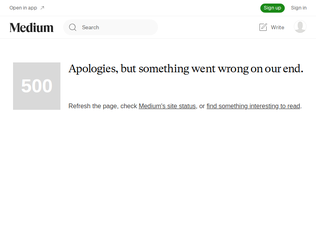
"One obvious reason is Python's extreme readability, it has often been described as being as close to executable pseudo-code as one can get.If you're using an LLM to write code I think the rules would be1. Use a language you know really well so you can read it easily, and add to it as needed.2. Use a language that has a large training set so the LLM can be most efficient.3. Use a language that is easy to read.If your language has a small training set or you don't intend to do much addition or you don't really know any language that well or are restricted from using choice 1 for some reason, 2 and 3 move up, and python has a large training set and it is easy to read."
"Read the first few comments and surprised I didn’t see it, but training data. The voluminous amount of Python in the training data.I could write in brainfuck with ai, but I presume, wouldn’t get the same results than if going with python.My follow up question: with AI now, why care about a lang until you need to?"
"No reason, unless the project is simple. The more you can offload onto your compiler/typer - the shorter is the feedback loop, the better agents work.Lack of strictly enforced static typing make agents fail much sooner with Python. In my opinion, Rust and Scala are the best targets for agentic flows - and, coincidentally, they have the most advanced typers among mainstream languages.But any statically typed language behaves better than any dynamically/duck typed language. When I say "better" I mean delivery time and the amount of shipped defects.Another thing which helps (but not generally applicable) - ask your agent to verify critical protocols with formal proof in TLA+/lean/coq. Agents are bad at formal proofs - but generally are much better than most of the humans."
"This is amazing.. ive been working with custom CUDA kernels and https://crates.io/crates/cudarc for a long time, and this honestly looks like it could be a near drop-in replacement.im especially curious how build times would compare? Most Rust CUDA crates obv rely on calling CMake or nvcc, which can make compilation painfully slow. coincidentally, just last week i was profiling build times and found that tools like sccache can dramatically reduce rebuild times by caching artifacts - but you still end up paying for expensive custom nvcc invocations (e.g. candle by hugging face calls custom nvcc command in their kernel compilation): https://arpadvoros.com/posts/2026/05/05/speeding-up-rust-whi..."
"I'm quite interested in how they dealt with Rust's memory model, which might not neatly map to CUDA's semantics. Curious what the differences are compared to CUDA C++, and if the Rust's type system can actually bring more safety to CUDA (I do think writing GPU kernels is inherently unsafe, it's just too hard to create a safe language because of how the hardware works, and because of the fact that you're hyper-optimizing all the time)"
"I wonder what it means for Slang[0]. Presumably the point is that people want to do GPU programming with a more modern language. But now you can just use Rust...(Disclaimer: I like Slang a lot.)[0]: https://shader-slang.org/"
"The superhuman efforts that folks on HN make to find technical workarounds and solutions is wonderful to see, but we must realize that this is not a technical problem. It's a social and legislative one. It can't be fought on technical grounds. The push back has to be via putting pressure on politicians by making regular people more aware.Right now, the vast majority of users are being bombarded with a one sided narrative of how 'insecure' their devices are. They read almost everyday about someone losing their life's savings due to 'hackers'. In this environment, they genuinely believe locking down their devices will make them more secure and prevent them from being 'hacked'.The powers that be make sure that the people never hear the other side. That people are giving absolute control to large corporations. In my experience, once the issue is framed as 'Google will decide what you can do with your phone' every single person is immediately outraged.If you want to make a meaningful contribution, however small, then make it a point to educate people about the control they are giving to large corporations like Google. It doesn't take much to convince them that Google et al don't have their best interests in mind. They already know it and have experienced it. The second thing to do is to encourage them to reach out to their member of congress via letters. It's easy enough to do, and politicians are terrified of going against voters. They rely on people's ignorance to quietly work against their constituent's interests while supporting whichever special interest happened to donate the most to their campaign fund."
"Requiring authorized silicon (and software) isn't even the biggest problem here.They do not use zero knowledge proof systems or blind signatures. So every time you use your device to attest you leave behind something (the attestation packet) that can be used to link the action to your device. They put on a show about how much they care about your privacy by introducing indirection into the process (static device 'ID' is used to acquire an ephemeral 'ID' from an intermediate server) but it's just a show because you don't know what those intermediary severs are doing: You should assume they log everything.And this just the remote attestation vector, the DRM 'ID' vector is even worse (no meaningful indirection, every license server has access to your burned-in-silicon static identity). And the Google account vector is what it is.Using blind signatures for remote attestation has actually been proposed, but no one notable is currently using it: <https://en.wikipedia.org/wiki/Direct_Anonymous_Attestation>There are several possible reasons for this, the obvious one is that they want to be able to violate your privacy at will or are mandated to have the capability. The other is that because it's not possible to link an attestation to a particular device the only mitigation to abuse that is feasible is rate limiting which may not be good enough for them - an adversary could set up a farm where every device generates $/hour from providing remote attestations to 'malicious' actors."
"In 1999, Intel received an absolutely massive amount of opposition when they decided to include a software-readable serial number in their CPUs, so much that they reversed the decision.Then the "security" and Trusted Computing authoritarians continued pushing for TPMs and related tech, and contributed to the rise of mobile walled gardens. Windows 11's TPM requirements were another step towards their goal. The amount of propaganda about how that was supposed to be a good thing, both here and elsewhere, was shocking.It turns out a significant (but hopefully decreasing) number of the population is easily coerced into anything when "security" is given as a justification.The war on general-purpose computing continues, and we need to keep fighting.Stallman was right, as always. Time to give his "Right to Read" another read. (If it hasn't been done already, an AI-generated short film of it would be a great idea...)"Those who give up freedom for security deserve neither.""
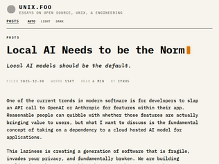
"They will be, and that moment is not that far off. We've got the progression in place already: first, large data centers could have performant LLMs, we are now firmly in "a bunch of servers with a couple of H100s each" territory, slowly going into "128 GB VRAM on a MacBook Pro or a Strix Halo". Within the next year, the pattern of "expensive remote LLM for planning, local slow-but-faster-than-human LLM for execution" will become the norm for companies, slowly moving to "using local LLM for everything is good enough". And then we'll have the equilibrium we already have with the "classic cloud": you either self-host or pay for flexibility and speed. The question will be: how much of the current compute capacity craze will local hosting give the kiss of death to and what that means for the market."
"I feel like lots of people here are just commenting on the headline.This isn't about the local models you're running on your old gaming rig, or the tesla p40 rig you build for local llm's.This is about code leveraging the local resources where the code is running for it's AI needs. Rather than making an API call to an external AI service, the code leverages the AI capabilities built into the hardware it runs on. With modern Apple, Intel, and AMD silicon all shipping dedicated AI acceleration, this is the where IMO the focus should be heading.How many Flops or whatever can your phone do? I bet it's enough to paint the walls of your living room, or draw a pretty good pelican on a bike."
"Here's some things you can do right now with local models on a consumer device:- text-to-speech - speech-to-text - dictionary - encyclopedia - help troubleshooting errors - generate common recipes and nutritional facts - proofread emails, blog posts - search a large trove of documents, find information, summarize it (RAG) - manipulate your terminal/browser/etc - analyze a picture or video - generate a picture or video - generate PDFs, documents, etc (code exec) - simple programming - financial analysis/planning - math and science analysis - find simple first aid/medical information - "rubber ducking" but the duck talks backA quarter of those don't need more than a gig of RAM, the rest benefit from more RAM. Technically you don't even need a GPU, it just makes it faster. I do half that stuff on my laptop with local models every day.That said, it really doesn't need to be local. I like the idea that I can do all that stuff offline if I'm traveling, but I usually have cell service, and the total tokens is pretty cheap (like $2/month for all my non-coding AI use)."
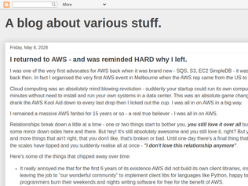
"> AWS stomped on open source projects - despite the clear desire of projects like Elasticsearch, Redis, and MongoDB not to be cloned and monetized, AWS pushed ahead with OpenSearch, Valkey, and DocumentDB anyway, capturing the hosted-service money after those communities and companies had built the markets; the result was a wave of defensive licenses like SSPL, Elastic License, RSAL, and other source-available models designed less to stop ordinary users than to stop AWS from stripping open-source infrastructure for parts, owning the customer relationship.This is completely backwards, at least with OpenSearch and Valkey. AWS didn't create the forks until after the upstream projects changed their license, so it's really weird to say that the forks "resulted" in the license changes when those forks where a response to the license changes. With Valkey in particular it was members of the former redis core development team that created Valkey."
"AWS / GCP / Azure aren't for individuals or small businesses. They won't tell you this anywhere, and they won't stop you from signing up - but they simply do not care one iota about users with anything less than $100k billing per month.They treat big account owners like kings, they fly them out to Formula 1 events, they get 3 day workshops in swanky retreats, because a few k spent on this equals maybe millions of dollars.If they respond to a small business quicker they don't get anything from it. They collect a bill that if it went missing they wouldn't notice.I am not saying this is right - but people running small businesses on these platforms are operating under false pretenses."
"These arguments against AWS are boring. 99% of the negative comments are along the line of "so i have a dead simple product, I dont know anything about AWS, I logged in and it was super complicated and it seemed pricey".Well guess what, if you have a CRUD website and 100 users you're just not the target. Move on.Some days ago I wanted to sketch a 3D model of my TV remote. I opened blender and what a mess of complicated windows and panes. I closed it immediatly. Do I think Blender is an over complicated mess? No, I just think I'm not the target. And I'm not offended to be too noob to use it."
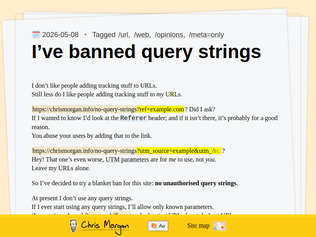
"You know I was actually really curious about this so I went back to the HTML and URL W3C standards and surprisingly they don't actually have any definitions of format other than being percent encoded. One might conflate query strings with "form-urlencoded"[0] query strings, which is one potential interoperability format, but in general a queries string is just any percent encoded string following a "?" in a url[1], and just another property in the "URL" HTML object that can be used in the generation of a response. While additionally there is a URLSearchParams object that is the result of parsing the query string with the form-urlencoded parser, this is simply an interoperability layer for JavaScript.I'm going to be honest, I was pretty geared up to have a contrarian opinion until I looked at the standards but they're actually pretty clear, a 404 could be a proper response to unexpected query string; query string is as much part of the URL API as the path is and I think pretty much everyone can acknowledge that just tacking random stuff onto the path would be ill advised and undefined behavior.[0]: https://url.spec.whatwg.org/#application/x-www-form-urlencod...[1]: https://url.spec.whatwg.org/#url-class"
"So my understanding is, he is annoyed that other website adds a query string such as "?ref=origin.com" to links pointing to authors website.How does this benefit the other website? How does this hurt the authors website?I am completely confused about the behavior of both side here.I get that when I run an ad-campaing I want google to add a utm-query string, so I can track which campaign users arrived from - but then the origin and the destination are working together. Here the origin just adds stuff for no reason. Why?"
"> It is a small, decentralised, self-hosted web console that lets visitors to your website explore interesting websites and pages recommended by a community of independent personal website owners.Back in the Stone Age, we called these “Webrings,” but they weren’t as fancy.One of the issues that I faced, while developing an open-source application framework, was that hosting that used FastCGI, would not honor Auth headers, so I was forced to pass the tokens in the query. It sucked, because that makes copy/paste of the Web address a real problem. It would often contain tokens. I guess maybe this has been fixed?In the backends that I control, and aren’t required to make available to any and all, I use headers."
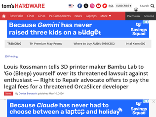
"I made the tragic mistake of getting a Bambu printer (an X1C, with AMS even...) right before they gave all of us the middle finger. I now have it offline, running out of date firmware, connected to a special WiFi network that is isolated from the Internet.That upset me, but now I'm pissed. Now I don't even care about their stupid printers. Now I'd like to waste Bambu Lab's time and cause problems for them.And also, while this X1C should be going strong for years, my eyes are on Prusa should I want another printer any time soon for any reason. Less polished or not, they seem like they're still better for consumers even though they are apparently less open than they used to be. But I'm of course interested in hearing what people recommend, too. (I got an X1C because I knew it would be simple, but I don't particularly mind getting my hands dirty or anything. I did build an Ender 3 kit before that.)"
"Bambu showed their true colours last year when they would've eliminated offline access altogether if not for public outrage. You don't own your Bambu printer, you're leasing it at a subsidised premium.This move does not surprise me at all, and I'm genuinely happy that Louis is willing to shell out money to help those that can't defend themselves.I'm happy that Bambu finally made Prusa care, but I will not cheer them even if they consistently innovate. It's just sad."
"Louis is one of the most passionate YouTubers you can watch. I don't think he gets it right 100% of the time, but when you are that vulnerable (and what appears to be authentic) you're bound to not make the the right call every once in awhile (as we all do).I support him even though people can pick him apart."
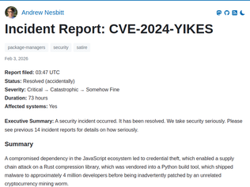
"For anyone confused, this is (very good imo) fiction about supply-chain incidents. It had me very worried during a brief scan that it was real though, which made me read it more attentively :)"
"> Day 1, 14:47 UTC — Among the exfiltrated credentials: the maintainer of vulpine-lz4, a Rust library for “blazingly fast Firefox-themed LZ4 decompression.” The library’s logo is a cartoon fox with sunglasses. It has 12 stars on GitHub but is a transitive dependency of cargo itself.I got a bit curious and here is an incomplete list of crates to compromise to be part of the cargo build and that already have a build.rs so it doesn't stand out to much:flate2 tar curl-sys libgit2-sys openssl-sys libsqlite3-sys blake3 libz-sys zstd-sys ccAs a nice bonus - if you get rights for xz2 you can compromise rustup.Fwiw at least they do track Cargo.lock"
"It's easy to be cynical because, yes, both the problems and solutions seem dead obvious in hindsight. But for a long time (and maybe even still), a hacker creed was "move fast and break things."It's great that there's so much momentum in fixing the glaring problems with supply chain systems like npm, but I'm concerned that we're entering a new era of security-related problems caused in large part by agentic development.I'm not just talking about Mythos/Glasswing surfacing vulnerabilities in pretty much everything it touches; I think the way we're developing software, pulling in dependencies, and potentially losing human thought modeling of complex systems is going to lead to a lot of hacked together software and infrastructure that humans won't fully understand.I hope in a few years we don't look back at today and wonder how we could have been so naive -- how we failed to actually plan for the long-tail of AI development in a way that doesn't solve problems by attempting to just use AI to rebuild complex systems.But the article was funny."
"I'm suspicious of their results with regards to tool usage.It's unsurprising that round-tripping long content through an LLM results in corruption. Frequent LLM users already know not to do that.They claim that tool use didn't help, which surprised me... but they also said:> To test this, we implemented a basic agentic harness (Yao et al., 2022) with file reading, writing, and code execution tools (Appendix M). We note this is not an optimized state-of-the-art agent system; future work could explore more sophisticated harnesses.And yeah, their basic harness consists of read_file() and write_file() - that's just round-tripping with an extra step!The modern coding agent harnesses put a LOT of work into the design of their tools for editing files. My favorite current example of that is the Claude edit suite described here: https://platform.claude.com/docs/en/agents-and-tools/tool-us...The str_replace and insert commands are essential for avoiding round-trip risky edits of the whole file.They do at least provide a run_python() tool, so it's possible the better models figured out how to run string replacement using that. I'd like to see their system prompt and if it encouraged Python-based manipulation over reading and then writing the file.Update: found that harness code here https://github.com/microsoft/delegate52/blob/main/model_agen...The relevant prompt fragment is: You can approach the task in whatever way you find most effective: programmatically or directly by writing files As with so many papers like this, the results of the paper reflect more on the design of the harness that the paper's authors used than on the models themselves.I'm confident an experienced AI engineer / prompt engineer / pick your preferred title could get better results on this test by iterating on the harness itself."
"Yeah I've been saying this for a while: AI-washing any text will degrade it, compounding with each pass."Semantic ablation" is my favorite term for it: https://www.theregister.com/software/2026/02/16/semantic-abl..."
"Least shocking thing I've read about LLMs recently.They are essentially like that one JPEG meme, where each pass of saving as JPEG slightly degrades the quality until by the end its unrecognizable.Except with LLMs, the starting point is intent. Each pass of the LLMs degrades the intent, like in the case of a precise scientific paper, just a little bit of nuance, a little bit of precision is lost with a re-wording here and there.LLMs are mean reversion machines, the more 'outside of their training' the context/work load they are currently dealing with, the more they will tend to gradually pull that into some homogenous abstract equilibrium"
"https://archive.is/JUPmz"
"I think there is a bit of wider social norms piece missing as well on AI use in knowledge work context.Someone forwarded an enormous amount of text over teams the other day at work. From someone (bless her) that always means well but usually averages about one spelling mistake per word and rarely goes over 20 words per message. Clearly copy paste chatgpt.For say hn gang that thinks in terms of context shifts, information load and things on THAT wave length the problem with that situation is obvious but I realised then that is not at all obvious to the average public. She genuinely seemed to think she's helping me by spending 15 seconds typing in a prompt and having me spend the next 30 minutes untangling the AI slop.There is zero understanding or consensus of acceptable practices around that sort of thing baked into societal norms right now."
""Many workers immediately revolted. In online comments, they blasted the tracking as a privacy violation, ..."“How do we opt out?” - Meta employeePoetic justice, or "dogfooding""
"I was a great admirer (and later friend) of Barlow, and I'm still very deeply influenced by the Declaration and many adjacent phenomena. I agree with some fraction of this post in terms of seeing many people shelving these principles when it gets inconvenient for them.In the past few months, I've been troubled by one specific part of the Declaration, in the final paragraph:> We will create a civilization of the Mind in Cyberspace. May it be more humane and fair than the world your governments have made before.Specifically, I think the cyberspace civilization, to the extent that it exists, has been a failure lately on "humane" in the broad sense. The author of the linked post might say that this has to do with the need for moderation (indeed this is a big surprise from the 1996 point of view, as there were still unmoderated Usenet groups that people used regularly and enthusiastically, and spam was a recent invention).I think there are lots of other things going on there over and above the moderation issue, but one is that the early Internet culture was very self-selected for people who thought that the ability to talk to people and the ability to access information were morally virtuous. I was going to say that it was self-selected for intellectualism but I know that early Internet participants were often not particularly scholarly or intellectually sophisticated (some of our critics like Langdon Winner, quoted here, or Phil Agre, were way ahead on that score).So, I might say it was self-selected in terms of people who admired some forms of communicative institutions, maybe like people whose self-identity includes being proud of spending time in a library or a bookstore, or who join a debate club. (Both of those applied to me.) This is of course not quite the same thing as intellectual sophistication.People were mean to each other on the early Internet, but ... some kind of "but" belongs here. Maybe "but it was surprising, it wasn't what they expected"? "But it wasn't what they thought it was about"?Nowadays "humane" feels especially surprising as a description of an aspiration for online communications. It's kind of out the window and a lot of us find that our online interactions are much less humane that what we're used to offline. More demonization of outgroups, more fantasies of violence against them, more celebration of violence that actually occurs, more joy that one's opponents are suffering in some way. (I see this as almost fully general and not just a pathology of one community or ideology.)I'm troubled by this both because it's unpleasant and even scary how non-humane a lot of Internet communities and conversation can be, and because it's jarring to see Barlow predict that specific thing and get it wrong that way. Many other things Barlow was optimistic about seem to me to have actually come to pass, although imperfectly or sometimes corruptly, but not this one."
"Also old enough to have been pre-internet:> Paper maps were absolutely horrible…No, and still not horrible. I jeep a trucker's atlas in my van for road trips. Siri and Google Maps (Gigi, we call her) don't seem to realize I want to stay on interstates making distance. Wandering some two-lane country road diagonally through Kansas might save me 10 minutes but having oncoming traffic and the possibility of a rock into the windshield (or worse)—not worth it.I plan my routes with the paper map.> In practice it was mostly an annoying game of attempting to guess where people were. You'd call their job, they had left. You'd call their house…That does not ring a bell at all with me. Sure, I'd call and someone wasn't home, but that was the end of it. If someone else answered, it was "Hey, have them give me a call…" And of course answering machines became a thing…You know, there was just generally less of an urgency to get a hold of someone then.And you know what sucks now? Someone able to get a hold of you whenever, wherever. (Unless I go out of my way to shut off my device.)I used to laugh at a family member and spouse. They were early mobile phone adopters and I watched them call one another constantly with, "When are you going to be home?" I finally commented, "You know what would have happened if you had not called? They would have just shown up in 10 minutes or whatever."Urgency, expectations… too high these days.> Cassettes are the worst way to listen to music ever invented.Except for creating portable playlists, sure.Anyway. <rant off>"
"> examples of the ideology that powered and continues to power techWould that it were so.Semi-connected rant: What happened to so many startups to kill the mood was the pattern of: Do something technically legal (or technically illegal!) in a way that seems fixable at first, scale to huge size to get lawyers and lobbyists, pivot to strongly supporting government efforts to rein in "lawlessness" or "combat fraud" or "protect children", and then entrench oneself as the status quo while authoring or suggesting legislation to raise a moat against any competitors that might newly start up. PayPal, Facebook, Airbnb, Uber, and others tried this. Backpage and e-gold are unsuccessful examples of the same strategy."
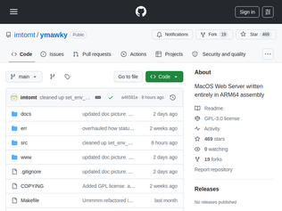
"If you actually start writing big stuff in assembly, esp a macro-assembler, you'd quickly realize it is more verbose, but not fundamentally that different from higher level programming. You basically need to get a hang of how to build abstractions with procedures and macros and you'd be good to go. Reading assembly effectively is often much harder than writing it."
"It's a beautiful project, well crafted. To reflect to the other comments, projects like this are more like a Minecraft map for me. There are giant and amazing maps, small survival maps, local hosted for my friends and myself, and commercial focused high scale servers. Building a house, or designing a new road in the server became extremely easy with AI, put the value created in the world depends on the original purpose of the server and whether creating more houses and roads actually makes sense. I think it's a super thing that commercial server can build out faster and be bigger with more houses and roads on it, but The love an art project creates in the world is incomparable."
"Gave me a warm feeling to know that someone would actually still bother to do this by hand. I'm not the only one!"
"Top man, lives up on Richmond Hill and absolutely loves it - when asked about his travels and adventures and where he would choose to live, he replied, "I already live there"Fairly well-known locally is that my favourite bookshop, The Open Book in Richmond, stocks signed copies of all his books. They used to be signed directly on the page, but since he got to the mid-to-late nineties in age, tons of hardbacks are too much, so Helena wanders up there to get a load of bookplates signed these days.Apart from that, I order all my books from them when I'm in London and a subsequent chat with Madeleine usually lasts ten times as long as the book shopping.Anyway, I digress, yes, Sir David, amazing body of works and the books are wonderful."
"He was just mentioned on today's Lateral podcast with Tom Scott.Apparently, he's the reason tennis balls are yellow.I guess they were traditionally white but when they started broadcasting matches on TV it was too hard to see the ball.David who was at the BBC at the time suggested they use yellow balls instead so they would come through on camera. Ever since then tennis balls have been yellow."
"A true hero in my life. I had VHS copies of Trials Of Life that I wore out through watching over and over as a child. It opened my eyes to the world and wonder of nature. In college I started hunting down every single appearance he had listed in any filmography I could find and have a hard drive in my attic with all but a couple of his earliest Black and White appearances from the earliest part of his career. I haven’t kept up with it with the newest stuff in the past 15 or so years but I definitely need to pull that out and see if I can finalize his catalog."
"This jives with what I've experienced in the brief time I had access to 5.5 Pro. It's the very first LLM that I feel like I can wrangle into solving tedious, but straightforward, problems correctly. It still makes a ton of mistakes and needs to be very rigidly guided, but it does a pretty good job of tracing its own reasoning and correcting itself in a way that the other models do not.The downside (not noted in the article, but noted by others here) is cost. It uses tokens at an insane rate, the tokens cost a lot, and using it with subagent flows that you can use to have it tackle large problems with high accuracy costs even more. It is also much "slower" for large scale problems because of context limitations -- it has to constantly rediscover context for each part of the problem, and in order to make it accurate you need to wipe its context before progressing to the next small part, or launch even more agents. For mathematical proofs like these, where the required context to understand the problem and proof besides stuff that's already available in its training set is small and the problems are considered "important" enough, this might not be a problem, but for many of the tasks I would like to use it for (ensuring correctness of code that affects large codebases, or validating subtle assumptions) it definitely is one.So I think it will be a while before the impressive capabilities of these models really percolate into our lives as programmers, unless you're one of the lucky ones given unlimited access to 5.5 Pro."
"It's a very long post with a mix of technical (math) and philosophical sections. Here are the most striking points to reflect upon IMHO.> It seems to me that training beginning PhD students to do research [...] has just got harder, since one obvious way to help somebody get started is to give them a problem that looks as though it might be a relatively gentle one. If LLMs are at the point where they can solve “gentle problems”, then that is no longer an option. The lower bound for contributing to mathematics will now be to prove something that LLMs can’t prove, rather than simply to prove something that nobody has proved up to now and that at least somebody finds interesting.Training must start from the basics though. Of course everybody's training in math starts with summing small integers, which calculators have been doing without any mistake since a long time.The point is perhaps confirmed by another comment further down in the post> by solving hard problems you get an insight into the problem-solving process itself, at least in your area of expertise, in a way that you simply don’t if all you do is read other people’s solutions. One consequence of this is that people who have themselves solved difficult problems are likely to be significantly better at using solving problems with the help of AI, just as very good coders are better at vibe coding than not such good codersPeople pay coders to build stuff that they will use to make money and I can happily use an AI to deliver faster and keep being hired. I'm not sure if there is a similar point with math. Again from the post> suppose that a mathematician solved a major problem by having a long exchange with an LLM in which the mathematician played a useful guiding role but the LLM did all the technical work and had the main ideas. Would we regard that as a major achievement of the mathematician? I don’t think we would."
"A very interesting comment from Baez, I'll just quote part of it.> Where does the value of thinking and having deep ideas come from? We need to think about this now. If it comes primarily from their scarcity – the fact that having certain ideas is hard – then indeed this value may drop precipitously when the manufacture of ideas can be automated. But if the value comes from the utility of the ideas – the benefit that the idea brings – then the story changes: perhaps creating more good ideas is actually better, not worse. Here I’m using “utility” in a broad sense, not just in the sense of what people often call applied mathematics.> In other words, mathematicians may need to adjust to a transformation from a scarcity economy to an abundance economy.https://gowers.wordpress.com/2026/05/08/a-recent-experience-..."
"* I'm not in that city.* It's running a kind of Chrome on a kind of Linux, at a stretch.* Nobody can infer when I work and when I sleep. That includes me.* The recent, high-end display is the screen of a low-end tablet I bought in a supermarket five years ago.* But yes, browser fingerprinting is annoying.* Since you can detect light mode, would it kill you to honor it?"
"I am once again asking privacy advocates to try sounding normal for once. Trying to make a browser accessing your timezone sound nefarious isn't going to convince anyone of anything."
"Whether or not the information is accurate isn't really the point. It's that it serves as a way to identify you even without cookies. I looked for better websites, the EFF one[0] is informative.My browser fingerprint was unique among the visitors in the past 45 days.[0] https://coveryourtracks.eff.org/"
"IA needs to do what Usenet has done. Have a bunch of mission-aligned but unrelated orgs (under different ownership and distributed around the world) that peer with each other, distribute all the content obtained by any of the orgs to each other, but that have no technical channel nor capability to distribute DMCA complaints and takedown requests.This is (AFAIK) basically how Usenet piracy works. You send your warez to one provider, and that provider instantly replicates them to all the providers they peer with, recursively, until they eventually reach the entire network. When any of those providers get a DMCA complaint, they remove the offending files (as they're required to do by law), but they don't inform other providers that they've received a DMCA notice, so those providers keep serving those files. This makes it much harder to remove data from the network than it is to add it."
"Relevant blog post: https://blog.archive.org/2026/05/06/internet-archive-switzer...> Internet Archive Switzerland joins a growing group of mission-aligned organizations, alongside Internet Archive, Internet Archive Canada, and Internet Archive Europe. Together, these independent libraries strengthen a shared vision: building a distributed, resilient digital library for the world."
"That website is really struggling. Very tempting to go to a mirror on archive.org to view it :)This seems very distinct from Internet Archive in the US, I wonder how separate it is.Internet Archive Canada (I worked there in 2024) operated like it was a subsidiary, even though I think it was technically an independent organization with some shared directors. Same Slack, same archive.org email domain, etc.IA.ch has Brewster and Caslon on the board.I suspect that for the political threats of the current decade the different Internet Archive organisations need to start operating more independently, especially when it comes to funding?"
"From 4 days ago: https://news.ycombinator.com/item?id=48019226 > I work on Bun and this is my branch > > This whole thread is an overreaction. 302 comments about code that does not work. We haven’t committed to rewriting. There’s a very high chance all this code gets thrown out completely. > > I’m curious to see what a working version of this looks, what it feels like, how it performs and if/how hard it’d be to get it to pass Bun’s test suite and be maintainable. I’d like to be able to compare a viable Rust version and a Zig version side by side."
"Very impressive that they could do this so quickly because I have been on a similar project (porting TypeScript to Rust) for 5 months. But I guess I don't have access to Mythos and unlimited tokens. I'm also close to 100% pass rate. 99.6% at the time of writing.https://tsz.devRust is perfect for writing all of code using LLM. It's strict type system makes is less likely to make very dumb mistakes that other languages might allow.Also want to note that writing the code using LLM doesn't remove the need to have a vision for the design and tradeoffs you make as you build a project. So Jarred and his team are the right kind of people to be able to leverage LLMs to write huge amounts of code."
"I just want to comment that I think it's a good change if we look past the AI involvement.Bun has had an extremely high amount of crashes/memory bugs due to them using Zig, unlike Deno which is Rust.Of course, if Bun's Rust port has tons of `unsafe`, it won't magically solve them all, but it'll still get better"
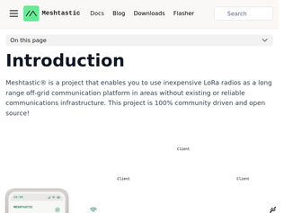
"I had never heard of this before, then last week I watched a video about it and was hooked. Now I'm seeing it everywhere!Meshtastic and Meshcore are both cool LoRa-based mesh text messaging that operate in an no-license-required band. While this limits your transmit power, it doesn't prohibit encryption - the inverse of most ham radio rules!Some cities have thriving communities of Meshtastic and/or Meshcore. You can look at maps of coverage to get a very general idea - in my experience, most Meshtastic nodes are NOT listed, while a good number of Meshcore nodes are.Meshtastic treats the mesh as dynamic - clients are assumed to always be moving, so transmissions flood between different nodes that are in eachother's reach.Meshcore has a static layer - repeaters that are assumed to be in fixed positions - and a dynamic layer - companions that move. With fixed and hopefully reliable connections between repeaters, routing paths between two users can be 'cached', which avoid the bandwidth overhead of flood routing.You can get started with a low cost ($30) transceiver board and an SMA antenna ($10) for the ISM band of your region. Stick it in a box an mount it somewhere high up, and see if you can pick up any other nodes!"
"We are in the South Pacific with our sailboat, and are using Meshtastic every day to talk between ourselves and with various buddy boats. The boat has a solar-powered repeater (CLIENT_BASE) on the mast that increases communications range significantly.This all works great with no local SIM cards or other subscriptions or infrastructure needed.We plan to run experiments with Reticulum when we stop for the cyclone season. Reticulum would open a lot more possibilities with both LoRa and internet-based comms. The Columba app seems to do a lot to bridge the usability gap, but work will need to be done to integrate Reticulum with our boat systems the way we have with Meshtastic (alerting, telemetry, digital switching control)."
"I took a plunge into learning about mesh networks, specifically because I love the idea of p2p/decentralized systems of communication. To be honest, I was surprised to find that my expectations for “where we are at” with this type of technology was pretty off-base. For some reason I thought by now it would be straightforward to do a little more than text messaging over a truly public and decentralized off-internet mesh. Maybe I’ve missed some things in my search (still learning!) and someone can correct my understanding."
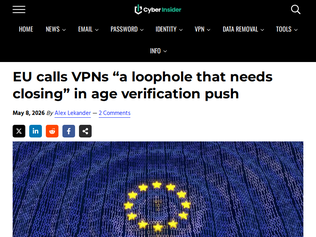
"In case people no longer remember, when China started to require websites to register for a license before be allowed to operate, it was for "protecting the children" too.This simple policy then goes on to silence most individual publisher(/self-media) and consolidated the industry into the hands of the few, with no opportunity left for smaller entrepreneurs. This is arguably much worse than allowing children to watch porn online, because this will for sure effect people's whole life in a negative way.Also, if EU really wants "VPN services to be restricted to adults only", they should just fine the children who uses it, or their parent for allowing it to happen. The same way you fine drivers for traffic violation, but not the road.And if EU still think that's not enough, maybe they should just cut the cable, like what North Korea did."
"This title seems misleading.The EP paper appears to be highlighting the existence of a debate regarding VPN.Relevant quote:"Some argue that this is a loophole in the legislation that needs closing and call for age verification to be required for VPNs as well. In response, some VPN providers argue that they do not share information with third parties and state that their services are not intended for use by children in the first place. The Children's Commissioner for England has called for VPNs to be restricted to adult use only.While privacy advocates argue that imposing age-verification requirements on VPNs would pose significant risk to anonymity and date protection, child-safety campaigners claim that their widespread use by minors requires a regulatory response. Pornhub and other large pornography platforms have reportedly lost web traffic following the enforcement of age-verification rules in the UK, while VPN apps have reached the top of download rankings."Of course I'm not saying the EU won't regulate VPNs, but nowhere in this paper is "the EU" stating that VPNs need closing."
"I think all the identity verification schemes should start with the beneficial owners of companies. Governments have been lobbied to allow complete anonymity for the wealthy that own businesses doing questionable things while regular people are going to have to show id to buy food."
"My concern here is that by gravitating to HTML you lose the ability for a human (you!) to easily co-author the document with the LLM. If it’s just an explainer for your consumption, that’s not a concern - but if it’s a spec sheet for something more complex, I deeply value being able to dive in and edit what is produced for me. With a HTML doc it is much harder to do that than with MD.Now of course you could just reprompt your LLM to change the HTML - but when I already have a clear idea of what I want to say in my head, that’s just another roadblock in the way.If this pattern becomes more common I suspect human/LLM co-creation will further dwindle in favour of just delegating voice, tone and content choice to the LLM. I was surprised not to see this concern in the blog post’s FAQ."
"When exploring a new idea or tool, my go to prompt is``` In a single index.html, no dependencies, sparse styling, create an app that <idea> ```Even before AI, it's how I built small tools, and there's something lovely about being able to email my friends the tool, and tell them "If you want to make a change, toss it to your LLM!""
"The irony of this being a Twitter post with pictures of html rendering instead of an interactive html page is not lost on me.Arguing for html on a platform with less rich semantics than markdown is just ultimately funny"
"This is surprisingly common.The security of UUIDv4 is based on the assumption of a high-quality entropy source. This assumption is invalidated by hardware defects, normal software bugs, and developers not understanding what "high-quality entropy" actually means and that it is required for UUIDv4 to work as advertised.It is relatively expensive to detect when an entropy source is broken, so almost no one ever does. They find out when a collision happens, like you just did.UUIDv4 is explicitly forbidden for a lot of high-assurance and high-reliability software systems for this reason."
"Funny story no one will believe, but it’s true. A good friend of mine joined a startup as CTO 10 years ago, high growth phase, maybe 200 devs… In his first week he discovered the company had a microservice for generating new UUIDs. One endpoint with its own dedicated team of 3 engineers …including a database guy (the plot thickens). Other teams were instructed to call this service every time they needed a new ‘safe’ UUID. My pal asked wtf. It turned out this service had its own DB to store every previously issued UUID. Requests were handled as follows: it would generate a UUID, then ‘validate’ it by checking its own database to ensure the newly generated UUID didn’t match any previously generated UUIDs, then insert it, then return it to the client. Peace of mind I guess. The team had its own kanban board and sprints."
"This is usually caused by an insufficently seeded PRNG.Are you generating the UUID in the backend, or the frontend? Frontend is fundamentally unreliable for many reasons, including deliberate collisions. So if that case you'll need to handle collisions somehow. Though you can still engineer around common sources of collisions, the specifics depend on the environment.On the other hand making a backend reliable is feasible. What kind of environment is your code running in? Historically VMs sometimes suffered from this problem, though this should be solved nowadays. Heavily sandboxed processes might still run into this, if the RNG library uses an unsafe fallback. Forking processes or VMs can cause state duplication and thus collisions."
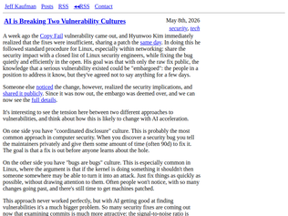
"This has been a very long time coming and the crackup we're starting to see was predicted long before anyone knew what an LLM is.The catalyst is the shift towards software transparency: both the radically increased adoption of open source and source-available software, and the radically improved capabilities of reversing and decompilation tools. It has been over a decade since any ordinary off-the-shelf closed-source software was meaningfully obscured from serious adversaries.This has been playing out in slow motion ever since BinDiff: you can't patch software without disclosing vulnerabilities. We've been operating in a state of denial about this, because there was some domain expertise involved in becoming a practitioner for whom patches were transparently vulnerability disclosures. But AIs have vaporized the pretense.It is now the case that any time something gets merged into mainline Linux, several different organizations are feeding the diffs through LLM prompts aggressively evaluating whether they fix a vulnerability and generating exploit guidance. That will be the case for most major open source projects (nginx, OpenSSL, Postgres, &c) sooner rather than later.The norms of coordinated disclosure are not calibrated for this environment. They really haven't been for the last decade.I'm weirdly comfortable with this, because I think coordinated disclosure norms have always been blinkered, based on the unquestioned premise that delaying disclosure for the operational convenience of system administrators is a good thing. There are reasons to question that premise! The delay also keeps information out of the hands of system operators who have options other than applying patches."
"This is exactly what happened with Log4Shell.Day -X + 1: Engineer at Alibaba finds the vuln and tells Apache. Patch is pushed to git while new release is coordinated.Day -X: A black hat sees commits fixing the bug. Attacks start happening.Day 0: Memes start circulating in Minecraft communities of people crashing servers. Some logs are shared on Twitter, especially in China, of people getting pwned.Day 0 + ~4 hours: My friend DMs me a meme on Twitter. I look up to find the CVE. Doesn't exist. My friend and I reproduce the exploit and write up a blog post about it. (We name it Log4Shell to differentiate it from a different, older log4j RCE vuln)Day ~1: Media starts picking it up. Apache is forced to release patches faster in response. CVE is actually published to properly allow security scanners to identify it.Today: AI makes this happen faster and more consistently. Patches probably should be kept private until a coordinated disclosure happens post-testing and CVE being published?Hard to say what the right move is, but this is gonna be happening a lot over the next 1-3 years. Lots of companies are going to be getting cooked until AI helps us patch faster than attackers can exploit these fresh 0-days."
"We have a huge problem.The US is at war. Much of the world is at war at the cyber attack level right now. The US, the EU, most of the Middle East, Israel, Russia... Major services have been attacked and have gone down for days at a time - Ubuntu, Github, Let's Encrypt, Stryker. Entire hospital systems have had to partially shut down.Now, in the middle of this, AI has made attacks much faster to generate. Faster than the defensive side can respond. Zero-day attacks used to be rare. Now they're normal.It's going to get worse before it gets better. Maybe much worse."
"This is awkward.Exhibit A - September 2025 - "Help build the future" - Cloudflare hires 1111 interns to "help build the future" [https://blog.cloudflare.com/cloudflare-1111-intern-program/]Exhibit B - May 2026 - "Building for the future" - Cloudflare lays off 1100 people, about 20% of their workforce to "continue building the future" [https://blog.cloudflare.com/building-for-the-future/]I'll finish on this quote: "The future ain't what it used to be." — Yogi Berra"
"> The packages for departing employees will include the equivalent of their full base pay through the end of 2026. Healthcare coverage is different across the globe, and if you’re in the United States, we’ll continue to provide support through the end of the year. We are also vesting equity for departing team members through August 15th, so they receive stock beyond their departure date. And, if departing team members haven’t hit their one-year cliffs, we are going to waive those and vest their pro-rated equity through August as well.The announcement reads as pretty heartless to me, but this is a very, very nice departure package"
""We are our own most demanding customer. Cloudflare’s usage of AI has increased by more than 600% in the last three months alone. Employees across the company from engineering to HR to finance to marketing run thousands of AI agent sessions each day to get their work done. That means we have to be intentional in how we architect our company for the agentic AI era in order to supercharge the value we deliver to our customers and to honor our mission to help build a better Internet for everyone, everywhere."As an English enthusiast, I'm getting very frustrated at how the language is consistently abused in executive communications to write words without saying anything.The implication that is NOT said is that suddenly 20% of people were sitting around without any work to do because AI was making everyone so efficient and productive. This does not, however, seem to be the reality, based on conversations within the company. It appears we have yet another case of economic downturn disguised as increasing velocity."
"The story is longer: Poland was the first country to make a remarkable peaceful transition from a bankrupt, failed Soviet satellite state. The shock therapy, plus NATO and EU aspirations, paved the way.It is a story of a country that made a lot of the right decisions along the way. Managed to keep consistent high growth, not a pony trick or boom/bust mode.Poland should be a role model for many other countries.Recommend a book: https://www.amazon.com/Europes-Growth-Champion-Insights-Econ...And Noah's blog post: https://www.noahpinion.blog/p/the-polandmalaysia-model"
"I live in Poland. This headline is misleading. Poland didn't build a top-20 economy. Western Europe and the US built their economy in Poland, because the labor is educated and cheap.There are almost no globally competitive Polish companies. The "growth" is branch offices of German and American corporations taking advantage of engineers who'll work for 40% of Berlin rates. Remove the foreign-owned sector and you're looking at a mid-tier economy running on EU structural funds.It's a great place to live, genuinely. But calling this "Poland's economy" is like calling a McDonald's franchise "your restaurant""
"Years ago I bought some really nice brushless motors and was surprised to see they were made in Poland. I had no idea they were manufacturers of things like that.Later I bought even nicer motors, meant to provide exceptional control and feedback for tactile/haptic behaviours, and they were from Poland too.Then I got to work on a robotic arm which contained a bunch of components from Poland. At this point it was clear to me that it wasn’t coincidence.Finally, I built a drone with my kids and again, the motors are Polish. And they’re excellent.They went from being a place I would only expect to encounter cultural food items from to a place that entered a high tech supply chain which seems to produce high enough quality components that I see them without seeking them out.As a Canadian it made me very envious. We should be able to do this. I’ve seen a handful of Canadian motors in my life, and they were all blower motors a long time ago. Our ability to build cutting edge technology seems to be so limited as to be virtually irrelevant in most cases."
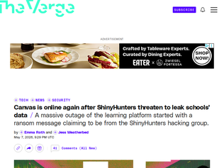
"Perspective from the trenches: I teach at a university that uses Canvas. We are in our final exams period right now.We got our first email (from Academic Affairs) notifying us that it was down at 5:17pm EDT this afternoon, with little info; followup emails were sent at 6:24 and 6:57 with more info, but mostly about how we would be compensating for it and not about what actually was going on (other than, "nationwide shutdown" and "cybersecurity attacks", no further detail). I don't get a sense that they know much more than that, not that I would expect them to.A perhaps telling detail: they're instructing us to have students email us directly with any work that had been submitted via Canvas. That suggests that they have no particular confidence that it will come back up soon.I personally am only slightly affected; as a CS professor a lot of my students' work is done on department machines, and submitted that way, and I do the actual exams on paper. More importantly, I've never liked or trusted Canvas's gradebook, and so although I do upload grades to Canvas so students can see them, my primary gradebook is always a spreadsheet I maintain locally.But I have a lot of colleagues for whom this is catastrophic at a level of "the whole building burnt down with all my exams and gradebooks in it"---even many of those that teach 100% in person have shifted much or all of their assessment into Canvas (using the Canvas "quiz" feature for everything up to and including final exams), and use the Canvas gradebook as their source-of-truth record. We've been encouraged to do so by our administration ("it makes submitting grades easier"). For faculty in that situation, they have few or zero artifacts that the students have produced, the students themselves don't have the artifacts to resubmit via email because they were done in Canvas in the first place, and they have no record of student grades or even attendance (because they managed that all inside Canvas). I guess they have access to the advisory midterm grades from March, if they submitted them (most do, some don't), but that might be it.My gut feeling on this is that this is either resolved in hours (they have airgapped backups and can be working as soon as they can spin up new servers), or weeks (they don't). Very little in-between. And if that's true and we wake up tomorrow with this unresolved, I really have no idea what a lot of professors at my university and across the country are going to do to submit grades that are fair and reasonable. In the extreme case, they may have to revert to something we did in the pandemic semester (and before that, at my school, in the semester that two major academic buildings actually did burn to the ground a week before finals): let classes that normally count for a grade just submit grades as pass-fail. Because what else can you do?(Well, one thing you can do is not put your eggs all in one basket, and not trust "the cloud" quite so much, but that ship's already sailed. I do wonder if in the longer term, anybody learns any lessons from this....)UPDATE: As of 11:45pm EDT, my university's canvas instance is up and running! Here's hoping it stays (but I'll be downloading some stuff just in case...)"
"I'm surprised how few comments there are on this thread. This is probably affecting millions of students at the most stressful time of the year.Incidentally I've always hated Canvas and probably every other LMS provider, but what is particularly amusing about this current outage is that it is occurring at exactly the time when universities are demanding that all professors put all of their materials on Canvas, without exception, due to ADA compliance regulations. It is explicitly forbidden for professors to, e.g., refer to pdfs posted on a personal website.Other commentators here seem not to understand that many faculty also do not enjoy being forced to use Canvas."
"1. It should be illegal for any company to pay ransomware attacks. Period. No pay out ever. 2. The penalty for being the attacker should be linked to the system they violated. If you do this to a hospital and someone dies you are life in prison / chair. The minimum sentence should be so painful that it deters the attack.No this will not stop this and companies need to be held accountable for their lack of security investment. Every attack should be investigate if the company met an agreed industry standards best practices and staffing, etc. The penalties for not meeting the requirements should be punitive."
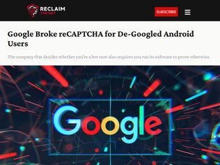
"My understanding is that this new reCAPTCHA is basically just remote attestation.Remote attestation doesn't use blind signatures (as that would be 'farmable') so tying the device to the 'attestee' is technically possible with collusion of Google servers: EK (static burned-in private key) -> AIK (ephemeral identity key in secure enclave signed by a Google server) -> attestation (signed by AIK). As you can see if the Google server logs EK -> AIK conversions an attestation can be trivially traced to your device's EK. This is also why we don't really see and probably never will see online services which offer fake remote attestations, as it will be pretty obvious that the next step of running such a service is getting Google as a customer and having all your devices blacklisted. Private farms probably won't last long either as I'm sure Google logs everything and will correlate.Unless something special is done with this new reCAPTCHA not only are you locking internet services behind TPM chips but you are also surrendering anonymity to Google. Unless you acquire untraceable burners for every service, the new reCAPTCHA will be technically capable to tying all your accounts across all these services together. Much like age verification. It may appear that the service would need to cooperate to link the reCAPTCHA session to your registration but the registration time alone will likely be sufficient (the anonymity set will be all but destroyed)."
"I've kept a spare cheap android for too long and recently went with Graphene instead. I have one Google profile and only use it for Uber, work's Google Chat and maps. One bank refused to work (even with Google services) so I moved bank. I've moved most of my mobile use to self hosted (freshrss full text, password manager, calendar, tasks) with no direct internet connection.It's a bit irritating but I'm glad I started down this journey because it looks more and more like I'm going to be avoiding the internet"
"Sites that use reCAPTCHA/Turnstile/etc. have already been broken for me for years now due to neverending captcha/refresh loops.My ISP regularly changes everyone's IP, and I apparently share an ISP with people who suck, so I get flagged just trying to do all sorts of normal things. Some examples:- I've never bought anything from Etsy but I'm somehow banned from even viewing their site at all.- Discord immediately bans me any time I try to create an account.- Can't buy flights from Delta, always gives a non-descript error.- Can't buy concert tickets, it thinks I'm a fraudulent buyer.- Most CF sites produce a "Sorry, you have been blocked" page, or just loop.- Trying to buy products on a shopping cart will have my order silently flagged/canceled for "VPN usage" (I don't use one).- Some sites/programs block me for being on the DroneBL or similar lists I did nothing to get onto, and have verified many times that it's not really coming from me.I just take my business elsewhere... eventually I'll probably just stop using technology at all."
"This was always a nightmare waiting to happen. The sheer mass of packages and the consequent vast attack surface for supply chain attacks was always a problem that was eventually going to blow up in everyone's face.But it was too convenient. Anyone warning about it or trying to limit the damage was shouted down by people who had no experience of any other way of doing things. "import antigravity" is just too easy to do without.Well, now we're reaching the "find out" part of the process I guess."
""Wait a week to install software" does not work. Just a few months ago a massive exploit hit the web, which was a timed attack which sat for more than a month before executing. If everyone starts waiting a week, their exploits will wait 2 weeks. Cyber criminals do not need to exploit you immediately, they just need to exploit you. (It also doesn't change a large range of vuln classes like typosquatting)"
"This is a baffling take.. These exploits are local privilege escalations for linux systems. They'll allow an attacker with a foothold in a shared environment or with low privilege access to a system to affect the rest of the system. They aren't RCEs and won't let attackers access environments that they couldn't before other than the shared hosting scenarios. That is absolutely not how most supply chain attacks are carried out. Most supply chain attacks are performed via credential theft and social engineering. The more sophisticated ones are APT style attacks like the Solarwinds one (which were carried out by organisations that would already have exploits like these) or more creative stuff like the Shai-Hulud fiasco. All of these options existed before these LPEs. If you're worried about supply chain attacks you've been worried for longer than Mythos has been out. Not updating your software is never good security advice."
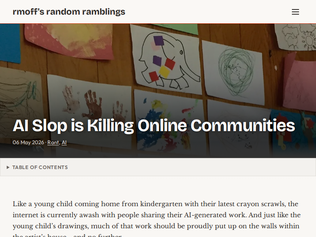
"I run a niche creative community, and we outlawed AI-generated content in 2022 as it was easy to see how corrosive it would be to the community.It hasn't been easy. We ban fake AI accounts daily and shrug off around 600 AI content creator accounts monthly.It's a lot of work, extra work that wasn't needed before AI content came around, and of course, that is an extra cost.I fear losing the battle."
"I kind feel this might be good. Bot writen comments and AI media that can no longer be distinguish from real, will make us human leave the social networks, which helped to separate Us humans. Going back to the real world were you can trully believe on what you see, and enjoy the tone, look and scent of of our fellows humans beings."
"I think the only reason stackoverflow still has any activity is because the community choose to ban AI content [1] and so did most of its other networks [2].Perhaps it will even see a (small) resurgence when AI providers start charging for the actual costs.[1] https://meta.stackoverflow.com/questions/421831[2] https://meta.stackexchange.com/questions/384922"
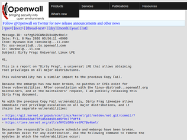
"This is very similar in root cause and exploitation to Copy Fail.Which illustrates pretty well something that's lost when relying heavily on LLMs to do work for you: exploration.I find that doing vulnerability research using AI really hinders my creativity. When your workflow consists of asking questions and getting answers immediately, you don't get to see what's nearby. It's like a genie - you get exactly what you asked for and nothing more.The researcher who discovered Copy Fail relied heavily on AI after noticing something fishy. If he had to manually wade through lots of code by himself, he would have many more chances to spot these twin bugs.At the same time, I'm pretty sure that by using slightly less directed prompting, a frontier LLM would found these bugs for him too.It's a very unusual case of negative synergy, where working together hurt performance."
""Because the embargo has now been broken, no patches or CVEs exist for these vulnerabilities."link: https://github.com/V4bel/dirtyfragdetailed writeup: https://github.com/V4bel/dirtyfrag/blob/master/assets/write-...importantly:"Copy Fail was the motivation for starting this research. In particular, xfrm-ESP Page-Cache Write in the Dirty Frag vulnerability chain shares the same sink as Copy Fail. However, it is triggered regardless of whether the algif_aead module is available. In other words, even on systems where the publicly known Copy Fail mitigation (algif_aead blacklist) is applied, your Linux is still vulnerable to Dirty Frag."mitigation (i have not tested or verified!):"Because the responsible disclosure schedule and the embargo have been broken, no patch exists for any distribution. Use the following command to remove the modules in which the vulnerabilities occur." sh -c "printf 'install esp4 /bin/false\ninstall esp6 /bin/false\ninstall rxrpc /bin/false\n' > /etc/modprobe.d/dirtyfrag.conf; rmmod esp4 esp6 rxrpc 2>/dev/null; true" conversation around the mitigation suggests you need a reboot or run this after the above on already-exploited machines: sudo echo 3 > /prox/sys/vm/drop_caches"
"And I ask again: why the f*ck is algif_aead getting all the flak for copy.fail? It's authencesn being stupid.authencesn didn't get fixed. Now we got the results of that, turns out you can access the same (I believe) out of bounds write through plain network sockets.I wish I thought of that, but I didn't.[ed.: I'm referring to the through-ESP issue. The RxRPC one is AIUI completely unrelated.]"
"I’ve done this for a couple years now, cool to see it pop up here. I believe the scale is a touch larger; 3935 acres in 2025, plus a small amount outside the fence line.On the technical side, we not only log but photograph everything, down to each clump of toilet paper. We check our progress by doing hundreds of tests identical to what the BLM does, both ahead and behind our main crew; bagging up any debris to be photographed on green screens where the pixels are counted to ensure we’re under the 2.29×10^-3 percent limit.It’s a stupendous amount of walking, with no shade, a moop stick and a bucket. But it’s a hell of a feeling to be part of making sure we remain undefeated against an impossible task that the future of burning man depends on."
"What I love about Burning Man is that it is an event where all the programming is created by the attendees. All the art, sound stages, art cars, experiences.. if you want something to exist in Black Rock City, then it is up to you to just go figure out how to bring it, solely for the benefit and joy of those who get to experience it. It is a tremendous amount of work, but the rewarding feeling of seeing your creation manifested into reality is worth it.So much of our daily lives in society is consuming experiences that other people create: the jobs we work are defined by other people, we buy products created by other people, we eat food made by other people. For me, Burning Man is a reminder for the rest of the year to be the creator of my own experience in the world."
"So a giant party can clean up after itself, but 4th of July in Tahoe for example is a toxic mess. I wish more people would practice these principles. It’s impressive how well this is cleaned up."
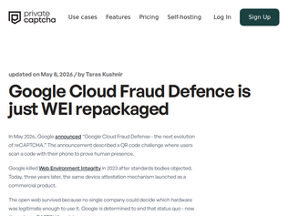
"I saw this coming from miles away. Computers are better at solving CAPTCHAs than people are and people can be bribed or convinced to join botnets so IP whitelisting doesn't work either. Now we have tons of fingerprinting and behaviour analysis but governments are cracking down on that. Plus, YouTube had a massive ad fraud problem with ads being played back in the background in embedded videos, so their detection clearly wasn't good enough.There aren't many good ways to prove you're not a bot and there are even fewer that don't involve things like ID verification.Their opt-in approach helps shift the blame to individual web stores for a while, so who knows if this will take off. But either way, in the long term, the open, human internet is either going away or getting locked behind proofs of attestation like this.Apple built remote attestation into Safari years ago together with Cloudflare and Google is now going one step further, as Apple's approach doesn't work well against bots that can drive browsers rather than scripted automation tools.Luckily, their current approach can be worked around because it's only targeting things like stores now and you can buy things from other stores. Once stores find out that click farms have hundreds of phones just tapping at remotely served content, uptake will probably be limited.It'll be a few years before this is everywhere, but unless AI suddenly isn't widely available anymore, it's going to be inevitable."
"From "Don't be evil" to building the largest, most invasive, surveillance operation the world has ever seen.That was true before this, but this indicates nothing will ever be enough. Google will always want to track more of everyone's activity online, and will use every tool at their disposal to do it."
"I think this is the third HN link I've clicked on in a row that leads to an LLM-generated article. I'm not opposed to AI, but I'm tired of seeing it quietly substituted for human thought and expression."
"It seems to me that adding AI to desktop apps and sending the data back to the mothership for processing is an amazing way to collect data from people who, for the most part, would be completely unaware it's even happening.Heck, most of them think the Internet is Chrome."
"My belief is that the AI business is all about data collection. The value isn't so much in the quality of the models (that's what enterprise customers and developers pay to get), but in the amount of data that comes "for free" to whoever hosts the models. And then it's worth whoever buys it thinks it is, like insurers or advertisers."
"And right after https://news.ycombinator.com/item?id=48019219 huh"
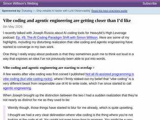
"The disconnect for AI is that it is a jagged frontier and it only really shines when one of its jagged frontiers extends counter to one of your valleys.If you've been writing Perl for 30 years, you might not want to learn JavaScript just to make a little fun idea in your head to show your wife. Vibe code that shit man. Who cares? Your wife does not care about LOC or those internal design decisions you made.If you're trying to learn something new like an algorithm, protocol, or API write that shit by hand. You learn by doing, and when you know how the thing works and have that mental context, you will always be faster than an AI. Also, when did we stop liking to learn? Why is it a bad thing to know all the ins and outs of a programming language? To write and make all the decisions yourself? That shit is fun. I don't care if you disagree.If you're at work and they really care about getting something out of the door, do whatever you think is best. If you just wanna ship vibed code and review PRs all day, all the power to you. If you wanna write it by hand, and use AI like a scalpel to write up boiler plate, review code, do PR audits, etc... go for it!A hammer is a really great tool that has thousands of purpose-designed uses. I still prefer my key to get into my car. It's all tools, you are a person.A lot of this stuff if coming top-down from people who do not have the experience you do. Wouldn't a smart employee use their expertise to advise the organization? If you work at a company where that would not be okay, maybe it's time to start looking for another firm."
"Vibe Coding (and LLMs) did not create undisciplined engineering organizations or engineers. They exposed and accelerated them.Plenty of engineers have loose (or no!) standards and practices over how they write coee. Similarly, plenty of engineering teams have weak and loose standards over how code gets pushed to production. This concept isn't new, it's just a lot easier for individuals and teams who have never really adhered to any sort of standards in their SDLC to produce a lot more code and flesh out ideas."
"Perhaps I've missed a few weeks worth of progress, but I don't think that AIs have become more trustworthy, the errors are just more subtle.If the code doesn't compile, that's easy to spot. If the code compiles but doesn't work, that's still somewhat easy to spot.If the code compiles and works, but it does the wrong thing in some edge case, or has a security vulnerability, or introduces tech debt or dubious architectural decisions, that's harder to spot but doesn't reduce the review burden whatsoever.If anything, "truthy" code is more mentally taxing to review than just obviously bad code."
"Colossus 1 datacenter is the one using illegal power, is poisoning the air for poor communities near Memphis, and is potentially poisoning the water. It's likely the additional demand on the grid will cause massive blackouts during extreme weather events, putting residents at further risk. https://en.wikipedia.org/wiki/Colossus_(supercomputer)#Envir...So you can put Anthropic on your list of companies that like to talk big about safety, but when the rubber hits the road, profits matter more than safety."
"Anthropic renting out the data center Elon built for Grok is the kind of plot twist you can't make up."
"> As part of this agreement, we have also expressed interest in partnering with SpaceX to develop multiple gigawatts of orbital AI compute capacity.Anthropic is either taking this space business more serious than the general public, or posting this sentence was part of the deal to get the compute."
"The requirements for the mobile devices are listed here: https://support.google.com/recaptcha/answer/16609652So it seems that you will need a modern Android device with Google Play Services installed or a modern iPhone/iPad to be allowed to browse the web in the future.No mention of device integrity verification yet, but the writing is on the wall."
"Wow. So you will need a mobile device in future to browse the web, and Google will use mobile device identifier to de-anonymize you. And I assume they also carefully designed this to make life little harder for alternative search engines, their competitors. And probably they will not provide collected user data to competing advertising platforms to make them less competitive as well.Also the example is ridiculous, that you need to scan a QR code to place an order. Maybe they should require filing a visa application as well."
"As expected, they're bringing WEI back under a different name: https://en.wikipedia.org/wiki/Web_Environment_Integrity"
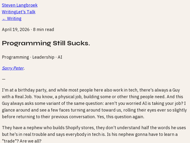
"oh shit haha hey y'all. i'm blown away. also my site is blown away, y'all killed my cloudflare account. maybe go to your room and think about what you did."
"> The truth is, working in tech always sucked, and never really was what they thought it was.This is just not true. Working in tech was awesome for me for at least thirteen years from 1988 - 2000. Probably well beyond, actually. The main reason it began to suck was due to business -- corporate acquisitions and mergers -- not tech. Working for a good company, solving fun problems, making meaningful software, and having happy customers was tech heaven."
"The so called AI job loses are not due to AI. I don't think there is anyone out there to argue otherwise.In a year but probably sooner, when software systems start collapsing, and they will, hiring in tech sector will skyrocket. In fact, I don't believe the world have enough developers to backfill for the AI deficiencies.To me the math is obvious. Assuming humans touch a 1% of all software systems created, something we know it is simply never going to be true given the current state and upcoming regulations, the 47 million developers world-wide (and that includes all kinds of developers) are simply not enough.However, although jobs will be back and it will be better payed, programming will "suck" even more and I don't think it will be for everyone. If you are not the kind of person that enjoys reversing a piece of tangled mess it might not be for you.If AI is everything and AI is software then everything is software and everyone would like to have a piece of that software."
"I have always loved SQLite.I have also heard that some firms ban its use.Why?Because it makes it SO easy to set up a database for your app that you end up with a super critical component of your application that looks exactly like a file. A file that can have any extension. And that file can be copied around to other servers. Even if there is PII in that file. Multiply this times the number of applications in your firm and you can see how this could get a little nuts.DevOps and DBA teams would prefer that the database be a big, heavy iron thing that is very obviously a database server. And when you connect to it, that's also very obvious etc etc.I still love SQLite though."
"I'm always inspired by SQLite. Overall I like it, but if you're not doing writes it's really overkill.So I made a format that will never surpass SQLite, except that it's extremely lighter and faster and works on zstd compressed files. It has really small indexes and can contain binaries or text just like SQLite.The wasm part that decompresses and reads and searches the databases is only 38kb (uncompressed (maybe 16kb gzipped)). Compare that to SQLite's 1.2mb of wasm and glue code it's 3% the size but searching and loading is much faster. My program isn't really column based and isn't suitable for managing spreadsheets, but it's great for dictionaries and file archives of images and audio.I ported the jbig2 decoder as a 17kb wasm module, so I can load monochrome scans that are 8kb per page and still legible.https://github.com/tnelsond/peakslabSQLite is very well engineered, PeakSlab is very simple."
"I went from thinking “SQLite is a toy product, not reliable for real data" to "lets use SQLite for almost everything"SQLite is very good if you can fit into the single writer, multiple readers pattern; you'll never lose data if you use the correct settings, which takes a minute of Google search to figure out.Today, most of my apps are simply go binary + SQLite + systemd service file.I've yet to lose data. Performance is great and plenty for most apps"
"The worst part is the sharp changes in the price being traded aren't achieved by magic but rather with guns & actual human suffering"
"Criminal probe into this started last month.https://www.reuters.com/business/energy/us-probes-suspicious..."
"If you are trading in the futures market and you don't have inside info or are not an actual supplier of the commodity, you are the sucker."
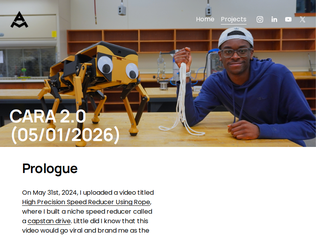
"3 DOF per leg, so it needs 12 motors and controllers. Getting that under $1000 is nice.Here's the US$18 motor: [1] Those things are getting really cheap. He did have to rewind it, though, for more turns with thinner wire. The manufacturer mentions that you can order with "custom Kv", which means you might be able to get a different winding from the factory if you order a reasonable quantity. Especially if you tell them that makes them "robot motors".Motor overheating might be a problem. The dog, just standing, has its motors stalled under load, converting power to heat. Drones don't do that. Temperature feedback would help if this thing has to operate for extended periods. Remember yesterday's article on humanoid robots and their cooling problems.The motor controller is nice too, and cheap at $49. Needed fixes to the firmware, but that's not surprising at the price. High performance motor controllers used to cost about $1000.Repurposed drone technology has done wonders for legged robots. We're not quite at the point where limb drive hardware is off the shelf, but it's way better than it used to be.[1] https://www.xntyi.com/tyi-5008-kv335/kv400-high-speed-brushl..."
"I love Aaed. Not only are the youtube video excellently produced and well researched, the website is a mine of information.This is spectacular as a reference, which youtube isn't"
"The jumps are pretty impressive, this thing has some power. I'd be very curious how fast you could get this dog with some reinforcement learning for a proper transverse gallop gait - and if it converges towards a gallop naturally, or if it discovers some other fast gait patterns during learning.Depending on the max speed of the motors/legs, giving it longer foot pads might be necessary for a good gallop. Intuitively, it looks a bit... "low gear" in the videos."
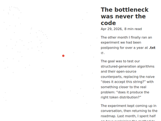
"It's hilarious to me to see the same kind of engineer, who throughout my career have constantly bitched and moaned about team meetings, agile ceremonies, issue trackers, backlogs, slack, emails, design reviews, and anything else that disrupted the hours of coding "flow state" they claimed as their most essential and sacred activity to be protected at all costs, suddenly, and with no hint of shame, start preaching about about the vital importance of collaborative activities and the apparent inconsequence of code and coding, the moment a machine was able to do the latter faster than them. I mean, they're not even wrong, but the nakedly hypocritical attitude of people who, until a year ago, were the most antisocial and least collaborative members of any team they were on is still extraordinary."
"I think veteran engineers have always known that the real problems with velocity have always been more organizational than technical. The inability for the business to define a focused, productive roadmap has always been the problem in software engineering. Constantly jumping to the next shiny thing that yields almost no ROI but never allowing systemic tech debt to be addressed has crippled many company's I have worked at in the long-term."
"Code is a liability.I think it can be easy to look at code as an asset, but fundamentally it is a liability. Some of the "bottlenecks" to new code are in place to make sure that the yield outweighs the increased liability. Agents that produce more code faster are producing more liability faster. Much of the excitement and much of the skepticism about coding agents is about whether the immediate increased productivity (new features) and even immediate yield (new products or new revenue) outweighs the increased long term liabilities. I'd say we won't find out for another 1-3 years, and of course that the answer will differ in different domains.From this perspective, attempting to build these bottlenecks into the agentic workflow directly makes some sense. Supplying coding agents with additional context that values a coherent project vision and that pushes back against new features or unconstrained processes would be valuable.Is this what the article is trying to get at? Is this attempting to make some agents essentially take on product management responsibilities, synthesizing as much as possible into a cohesive product vision and reminding the coding agents of that vision as strictly as possible? Should these agents review new proposals and new pull requests for "adherence to the full picture", whether you want to call this "context" or "vision" or something else?I think these agents might do an exceptionally good job at synthesizing context and presenting a cohesive roadmap that appears, linguistically, to adhere to the team values and vision. But I'm doubtful that they can have the discernment that a quality manager or team can have. Rapidly and convincingly greenlighting a particular roadmap could do more harm than good."
"> Leaders will own much more, with as many as 15+ direct reports. [...] Every leader at Coinbase must also be a strong and active individual contributor. Managers should be like player-coaches, getting their hands dirty alongside their teams.Oof. So not only are they giving their remaining managers more reports, but those managers will be expected to do lots of other, non-management work.Sure, nothing can go wrong there... Even if they didn't have non-managerial work to do, 15+ direct reports is just too many. They're not going to get to spend enough time meeting each report's needs, not a chance.I think as layoffs emails go, it's a pretty good one (as the current top comment points out[0]), but boy, I would not want to be working at a company like what Coinbase is turning into. Non-technical teams shipping code to prod? No thanks. "AI-native pods"? No thanks. I do like the idea of one-person teams; I was at my most productive when I was in that kind of role (though I'm not sure my experience generalizes). I get that companies are still struggling to figure out how to adapt to LLMs, but... damn.Pretty solid severance package for the folks being laid off, though.[0] https://news.ycombinator.com/item?id=48021843"
"I'll probably get some flack for this, but this is about as good of a layoff email as he could have sent.* explains the reasons (financials, AI enablement)* talks about what folks who are leaving get in detail (first) and thanks them* talks to the folks who are stayingLayoffs are hard, no doubt, and I am not sure he's making the right choice. I see plenty of doubt about some of the actions in other comments that echoes mine. I certainly wouldn't want to have 15 direct reports and also ship production code regularly. But as CEO, it's his job to make these kinds of choices.The proof is in the pudding as they say. We'll see how Coinbase does with this new orientation in the next year or so and that will determine if this was a wise or foolish move. Is there a flood of talent leaving? Major breaches? Business as usual with better than expected profits?Time will tell."
"> We’ll be concentrating around AI-native talentIs this code for "we're firing all the old people"? As I understand it, I can say I'll only hire proficient English speakers (a "bona fide occupational requirement"), but I can't say I'll only hire native speakers, as that would discriminate against various protected groups. This seems like the same thing—proficiency may be a bona fide requirement, but expecting they learned this year's workflow first is age discrimination.I don't expect ethical conduct from crypto companies and will not be sad if they are sued into oblivion."
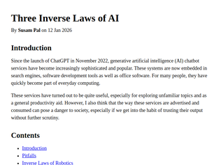
">Humans must not anthropomorphise AI systems. That is, humans must not attribute emotions, intentions or moral agency to them. Anthropomorphism distorts judgement. In extreme cases, anthropomorphising can lead to emotional dependence.Impossible. I anthropomorphise my chair when it squeaks. Humans anthropomorphise everything. They gender their cars and boats. This tool can actually make readable sentences and play a role.You need to engineer around this, not make up arbitrary rules about using it."
"With regard to my personal use of LLMs, I strongly agree with this framing. But to each point:Anthropomorphism: As we are all aware, providers are incentivized to post-train anthropomorphic behavior in their models - it increases engagement. My regret is that instructing a model at prompt time to "reduce all niceties and speak plainly" probably reduces overall task efficacy since we are leaving their training space.Deference: I view the trustworthiness of LLMs the same as I view the trustworthiness of Wikipedia and my friends: good enough for non-critical information. Wikipedia has factual errors, and my friends' casual conversation certainly has more, but most of the time that doesn't matter. For critical things, peer-reviewed, authoritative, able-to-be-held-liable sources will not go away. Unlike above, providers are generally incentivized to improve this facet of their models, so this will get better over time.Abdication of Responsibility: This is the one that bothers me most at work. More and more people are opening PRs whose abstractions were designed by Claude and not reasoned about further. Reviewing a PR often involves asking the LLM to "find PR feedback" and not reading the code. Arguments begin with "Claude suggested that...". This overall lack of ownership, I suspect, is leading to an increase in maintenance burden down the line as the LLM ultimately commits the wrong code for the wrong abstractions."
"I strongly disagree with this framing. It's patently insane to demand that humans alter their behavior to accommodate the foibles of mere machines, and it simply won't work in the majority of cases. Humans WILL anthropomorphize the AI, humans WILL blindly trust their outputs, and humans WILL defer responsibility to them.Asimov's laws of robotics are flawed too, of course. There is no finite set of rules that can constrain AI systems to make them "safe". I don't have a proof, but I believe that "AI safety" is inherently impossible, a contradiction of terms. Nothing that can be described as "intelligent" can be made to be safe."
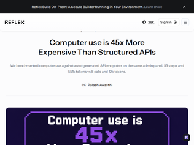
"Great guidance hidden in here for making it expensive for agents to navigate your website. Move elements on screen as the mouse moves, force natural mouse movement to make the UI work, change the button labels in the JS to be randomly named every visit, force scrolling to the bottom of the screen to check for hidden extra tasks...Hang on, that sounds like common corporate SaaS apps."
"I'm building something that fixes this exact problem[1].The landing page doesn't advertise it yet, but essentially, I give agents a small set of tools to explore apps' surfaces, and then an API over common macOS functions, especially those related to accessibility.The agent explores the app, then writes a repeatable workflow for it. Then it can run that workflow through CLI: `invoke chrome pinTab`Why accessibility? Well, turns out that it's just a good DOM in general. It's structure for apps. Not all apps implement it perfectly, but enough do to make it wildly useful.[1] https://getinvoke.com - note that the landing page is targeted towards creatives right now and doesn't talk about this use case yet"
"Is it possible to ask the vision agent to "map" the UI and expose it to another agent as a set of interfaces that resemble an API better? From what I understand the vision agent now should both know that "next page" shows more results and that they need to get more results in the first place.If one agent just explores the UI, maybe in a test environment, and outputs a somewhat-structured description of the various UI elements and their behavior, then another agent was given that description, would the other agent perform better that an agent that both explores the UI and tries to accomplish the given task at the same time?With an example UI I made up, the description (API-like interface definition) could be something like: Get all reviews: To get all the reviews you need to go to each page and click "show full review" for every review summary in that page. Go to each page: Start at page 1 (the default when in the Reviews tab). Continue by clicking the "next" button until the "next" button is no longer available (as you've reached the last page). So the second agent can skip some thinking about how to navigate because it already has that skill. The first agent can explore the UI on its own, once, without worrying about messing up if there's a test environment.Or am I misunderstanding the article completely? Probably. But it's interesting nonetheless. Sorry if it makes no sense."
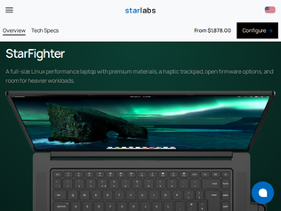
"Oh, is this actually out now? If so, great, but I took a quick look and didn't spot any third party review yet. For those interested in this laptop, personally I'd still wait for some reviews from some real world people.Some history on this laptop:- The StarFighter 16 was originally announced back in November 2022 with an original delivery timeline of 3-4 months: https://www.reddit.com/r/linuxhardware/comments/yjuahx/star_...- Here's a 500-comment HN thread from Feb 2023 about it (3-4 months later) now with an additional 4-5 month lead time: https://news.ycombinator.com/item?id=34759507- The latest production updates only go back to July 31 2025 - they mention a 3-5 month timeline from January 2025 (seeing a pattern?): https://starlabs.kb.help/starfighter-production-updates/There's an "Unboxing" video from Star Labs on the StarFighter from January 22, 2026: https://www.youtube.com/watch?v=HjYJS5AJZpESo, 3.5 years later, the chassis is still neat, and good on them for plugging away I guess, but for anyone that actually needs a new computer, there's no shortage of higher-end Linux-centric laptops with a better shipping track record (Framework, Tuxedo Computers, Slimbook, etc)."
"What an unfortunate time for these niche hardware companies to be launching new hardware. Framework, StarLabs, System76, (I wonder if Tuxedo will release something). The RAM prices must be killing them. Even if they increase prices to accommodate, I know quite a lot of folks who are simply punting any purchasing until things calm down."
"This page shows an image of a laptop motherboard with socketed memory https://us.starlabs.systems/cdn/shop/products/B5i7PCB-01x200... but it actually has BGA soldered LPDDR5X.I wonder why the price difference between the 8845HS and the 285H is more than the cost of some complete 8845HS based systems. Also a shame one can't opt out of the storage or accessories like (yet another) measly 65W USB C+USB A GaN charger.Other than those things, it actually looks decently exciting. I love the 16:10 + high resolution. Screen brightness isn't amazing, but also better than average. Glad to see 120 hz+ across all of the options. Privacy kill switch is great but the removable magnetic webcam seems a bit overkill/complicated given the kill switch (a simple physical slide would have been plenty as well). The hardware options aren't too bad for an open/Linux focused device. 6 USB ports + HDMI + audio ports is great, given the thickness it would have been cool to throw in a built in ethernet port, SD slot, and DP out to negate most of the need for the dock.If I hadn't already bought a laptop this year this would probably be high on my list."
"The reason this blog post does not come with any concrete examples how to use this enablement for useful and constructive things tells you something very important - it is a toy and they do not know who and how they will use it.It is cool feature but to what end? Buying a domain is not something you have to do daily to require any kind of automation.I am also not sure who Stripe Atlas for. I am genuinely confused. It is definitely not something a developer will use.I understand that you can bootstrap a number of systems but that is like half-hour of work and arguably it is probably a good idea to do it manually to make sure you have strong foundations.I've have personally never seen a good example where a cross vendor account provisioning actually working. For example, Fly.io used to provision Sentry accounts automatically which you could not access in any other way but through Fly.io. I mean the Sentry account was effectively locked to a project that you cannot transfer - hijacking the actual global alias as well. Vercel did something similar with PostgreSQL via Neon and Redis via Upstash resulting in painful migration processes.I can imagine ending in some kind of deadlock between services due to security hence why the 30 minutes initial setup is kind of time well spent to avoid future issues.Maybe it's me."
"The agent starts a phone call, listens to the person on the line, analyzes which fraud bucket they fall into, and start the process.While they are on the phone with the agent, it buys a domain relevant to the victim, the agent codes and deploy the website specially catered to them and the fraud bucket. Collect payment, destroy the website, redirect the domain to google.com. no need to start a new call because you had several agents committing the same fraud in parallel.It can also be used to make art."
"That is ironic. Four years ago, cloudflare didn’t let human me have an account / buy domains because I signed up, never used a single service but didn’t respond to a request to verify my drivers license> This account is in violation of Cloudflare's Terms of Service. Specifically fraud. The suspension is permanent.(Yes that’s really it. Sincerely. No “but I also abused X”)"
"Every time one of these vibe coded meme sites gets posted there’re endless comments about how it’s not actually because of load, the GitHub team is shit, their tech stack is shit, Microsoft is shit, Azure is shit, etc.Just compare the GitHub status page for public GitHub vs the enterprise cloud pages.Enterprise has much better numbers and I’ve personally can’t remember the last time there was an outage that prevented me from doing work.If the problems didn’t revolve around load, I’d expect to see the same uptime problems reflected on the enterprise offering."
"> Disruption with Gemini 2.5 Pro model> Disruption with Grok Code Fast 1 in Copilot> Incident with Copilot Grok Code Fast 1> Claude Opus 4 is experiencing degraded performanceIt doesn't seem fair to blame Github for this? There's nothing they can do about it?"
"Weekends are the untapped frontier. Still room to scale."
"I love the readme on the gitlab page [1]. It feels so.. friendly :)> This repository contains CAD files for the external shell (surface topology) of Steam Controller and the Steam Controller Puck, under a Creative Commons license. This includes an STP model of each, an STL model of each, and an engineering drawing with critical features/keep outs for each.Feel free to use these to make your own Puck holders, Controller sweaters, or whatever else you want to create!Your Steam Controller is yours, and you have the right to do with it what you want. That said, we highly recommend you leave it to professionals. Any damage you do will not be covered by your warranty – but more importantly, you might break your Steam Controller, or even get hurt! Be careful, and have fun.[1] https://gitlab.steamos.cloud/SteamHardware/SteamController"
"It sold out in less than an hour. Scalpers are at it again. Units are showing up for as much as $300 in resell-value already. What I don't get is why their shop page just gives me an "out of stock" panel, instead of the purchase button. Why won't they just let me buy and pay it, and have it ship whenever? Is having customers to regularly check for new stock (and potentially missing it) better than ... just having them buy it in advance like a pre-order? I really don't get it. Like wouldn't it even make for a better forecasting indicator when it comes to resupplying?"
"Looks like a super cool feature for disabled players.Regular controllers are good for people with the default number of arms, legs and fingers. But if you have some kind of disability, it's often pretty unique.Regular game/computer controllers for disabled folks were pretty pricey last time I've checked.AFAIK, 3d printing is not that expensive. Many places have hacker spaces or just people who print for almost free.So I guess it's a huge win for people who need accommodations. I'm very happy for that!I'm not disabled myself, it was just the first thought I had when I've read the news."
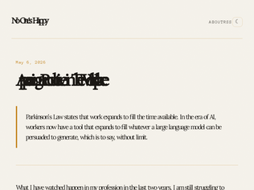
"> "Requirements documents that were once a page are now twelve. Status updates that were once three sentences are now bulleted summaries of bulleted summaries. Retrospective notes, post-incident reports, design memos, kickoff decks: every artifact that can be elongated is, by people who do not read what they produce, for readers who do not read what they receive."Great article. The "elongation" of workplace artifacts resonated with me on such deep level. Reminded me of when I had to be extra wordy to meet the 1000 minimum word limit for my high school essays. Professional formatting, length, and clear prose are no longer indicators of care and work quality (they never were, but in the past, if someone drafts up a twelve page spec, at least you know they care enough to spend a lot of time on it).So now the "productivity-gain bottleneck" is people who still care enough to review manually."
"What is described here closely resembles my experience too.My company is full of managers who haven't written code in years. They hired an architect 18 months ago who used AI to architect everything. To the senior devs it was obvious - everything was massively over engineered, yet because he used all the proper terminology he sounded more competent to upper management than the other senior managers who didn't. When called out, he would result to personal attacks.After about 6 months, several people left and the ones who stayed went all in on AI. They've been building agentic workflows for the past 12 months in an effort to plug the gap from the competent members of staff leaving.The result, nothing of value has been released in the past 18 months. The business is cutting costs after wasting massive amounts on cloud compute on poorly designed solutions, making up for it by freezing hiring."
"> The first is when novices in a field are able to produce work that resembles what their seniors produce [...]. > The second is when people generate artifacts in disciplines they were never trained in.There is a third shape. Experts who have become so reliant / accustomed to AI that it dilutes their previously sharp judgment and, importantly, taste. I am seeing more and more work produced by experts which seems strangely out of character. A needlessly verbose text written by someone who was previously allergic to verbosity. An over-engineered solution (complete with CLI, storage backend, documentation, unit tests) for a trivial problem which that person would've solved by an elegant bash one-liner only 3 years ago. The work itself is always completely immune to any rational criticism, as it checks all the boxes: extensive documentation, scalable, high test coverage, perfect code style, and for texts perfect grammar, non-offensive, seemingly objective. But, for lack of a better word, it simply lacks taste."
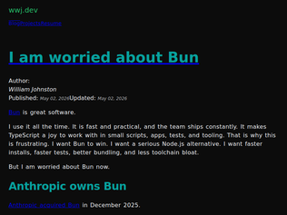
"I disagree with the overall premise: Before the acquisition, Bun had to figure out how to monetize at some point.Now, even though their parent company does some shitty practices with their other software (claude code), it's a stretch to assume this will also translate into making Bun worse: Being worried makes sense but I remain optimistic about Bun.Especially given the context of both of these different context: Claude Code is a gem of Anthropic, experiencing extreme growth and where any of its change can result in billing issues.Bun is a JS runtime, and regardless of its growth, can focus on being the best runtime possible: It doesn't impact billing nor the bottom line of Anthropic, so they don't have to rush out patches due to abuse unlike CC.It's unclear how it will pan out over the next years, still very early on the acquisition to see if anything will change, but I'm not concerned just yet."
"Bun has never really been well run. Every feature it had was full of bugs and gaps. And every release fixed a few but broke others.They released more major features and breaking changes in their last patch release than most software sees in two major versions.I've been using it just as a script runner and npm package manager basically, and it's incredible the amount of work you have to do to find "good" versions. We've had patch versions suddenly freeze on install more than once, we couldn't upgrade for quite a while due to this. I think they broke postinstall scripts with trustedDependencies entirely two minor versions ago - not a mention in release notes, and somehow no one reporting it in GH issues. In 1.1 or so you could get Bun to do trustedDependency builds in postinstall, and then after that you couldn't. I looked around for release notes and saw nothing mentioned. It's been broken for months."
"Why people use Deno and Bun over Node? I think it's neat that there are competitors for JS runtimes, but I really don't understand what advantages I'd get by swapping to one of these over Node. Bun has no REPL and worse JS engine, Deno is just Node with a restrictive, annoying permission system and no sqlite. Both claim better performance, but that only seems true in cherrypicked benchmarks, and in my tests (granted about a year ago at this point) both alternatives under-performed Node in my workloads. What am I missing?EDIT: Actually I just remembered I delivered a small ERP tool to a business a while back and I did opt to use I think Bun for that because it had the most robust tools to wrap a project into an `*.exe`, that was definitely a better experience than Node. Though since that was dependency-less JS I did the whole thing using Node and then just shipped it with Bun."
"I used a state (Colorado) healthcare marketplace website when I was going to take a break between jobs for a couple of months, and I feel very violated by the whole process. I entered a bunch of information to the website, knowing that the data could be expected to be shared for quotes, but I got no quote. The information didn't just flow between systems, it was just sent directly to a bunch of individuals. Instead of getting anything useful from the website, I just got told that agents would contact me, and then literally hundreds of agents were calling and texting me at all hours of the day and night for weeks. I asked one of them how to get it to stop and they said it was impossible during the government shutdown."
"The actual "sharing" was using the Meta pixel and TikTok's equivalent, presumably so the healthcare exchanges could do retargeting or similarity-based marketing to get people to sign up for health care coverage. Which, narrowly, seems like a reasonable thing to do. But of course using the pixel automatically "shares" the data with Meta/ByteDance/whoever, and they get to use it for whatever nefarious purpose they want."
"It should be illegal to send the data, and illegal to accept it; burn both sides of that bridge."
"This feels like a case of "It rather involved being on the other side of this airtight hatchway"[1]. If you can read arbitrary process memory, you're probably also in a position to just dump out the passwords by pretending to be the user in question.> If an attacker gains administrative access on a terminal server, they can access the memory of all logged‑on user processes.If an attacker has administrative access, they can also attach a debugger to every chrome process and force it to decrypt all the passwords. The only difference this really makes is in coldboot attacks, but even then it's still not clear whether it makes the attacker's job slightly easier, or allows an attack that's otherwise not possible.[1] https://devblogs.microsoft.com/oldnewthing/20060508-22/?p=31..."
"For reference, this is how Google says Chrome stores passwords encrypted in memory and uses an elevated service to prevent other processes from impersonating Chrome and gaining access to the plain text passwords: https://security.googleblog.com/2024/07/improving-security-o..."
"Since it's not been clearly stated: One attack vector might be that I step out to the bathroom for 5 minutes without locking computer, and evil hacker just dumps all my passwords before I come back.I think it's worthwhile considering this. There's a reason why password managers ask for a master password or passkey after 10 minutes. Since I thought Chrome relied on an encrypted enclave, it isn't quite feasible to extract passwords easily even with root access.Yes, you shouldn't leave your computer unattended. But that doesn't mean designing products that make exploiting the inevitable slipup fatal."
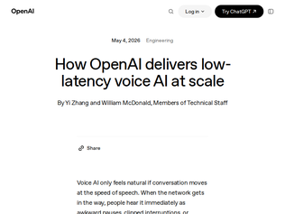
"Very grateful that OpenAI published the article/publicized their usage of Pion[0] a library I work on. If you aren't familiar with WebRTC it's a super fun space. I work on a book WebRTC for the Curious [1] that details how it works.[0] https://github.com/pion/webrtc[1] https://webrtcforthecurious.com"
"The low latency is more of a pain point than a good thing, the way they have it implemented. Trying to have a casual conversation with it, as humans we naturally pause, and GPT will take this as you are "done" and start blabbing away.I also suffer from finding the appropriate word I want as I've gotten older and slower, and this fast-voice-gpt just ends up frustrating me more than helping. I have to sit there and think out the whole sentence in my head before I say anything -- not very natural."
"Wait a minute... I’m genuinely happy that they are sharing this, but keep in mind that realtime audio model from OpenAI are still stuck with the 4o family in terms of capabilities, sadly. I still find them so useful, such a pity that there’s no real competitor in this segment, having the experience a real conversation has helped me so much in expressing ideas and concepts.Still, it’s worth to keep in mind that these are not frontier models, differently from when they were released.(Please Sam, if you read this, release the new realtime audio models)"
"I work on Bun and this is my branchThis whole thread is an overreaction. 302 comments about code that does not work. We haven’t committed to rewriting. There’s a very high chance all this code gets thrown out completely.I’m curious to see what a working version of this looks, what it feels like, how it performs and if/how hard it’d be to get it to pass Bun’s test suite and be maintainable. I’d like to be able to compare a viable Rust version and a Zig version side by side."
"Interesting to see this when the current top post on HN is someone worrying about Bun as it was acquired by Anthropic. The top comment there describes “Anthropic does experiments on their own codebase, the Bun team is not gonna do the same vibe coding experiments”.Yet here we are, what looks like a massive undertaking for vibe coding.Time will tell how this will turn out. Would be nice if the Bun maintainers could give some clarification about what they’re doing here, and why they’re doing this."
"Interesting how times have changed. Back in 2015, the entire Go runtime (already a mature codebase) was rewritten from C to Go semi-automatically: one of the maintainers wrote a C-to-Go conversion tool (for a subset of C they used) so that it compiled and produced identical output, and then the resulting code was manually refactored to make the Go code more idiomatic and optimized. And now you can just ask a language model.The slides: https://go.dev/talks/2015/gogo.slide#3An interesting similarity:>We had our own C compiler just to compile the runtime.The Bun team maintain their own fork of Zig too"
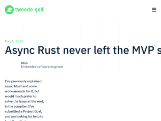
"Agree with the other commenters that the title is a bit too dramatic. The content was well written and got the point across.I still don’t have enough experience to have a strong opinion on Rust async, but some things did standout.On the good side, it’s nice being able to have explicit runtimes. Instead of polluting the whole project to be async, you can do the opposite. Be sync first and use the runtime on IO “edges”. This was a great fit to a project that I’m working on and it seems like a pretty similar strategy to what zig is doing with IO code. This largely solved the function colloring problem in this particular case. Strict separation of IO and CPU bound code was a requirement regardless of the async stuff, so using the explicit IO runtime was natural.On the bad side, it seems crazy to me how much the whole ecosystem depends on tokio. It’s almost like Java’s GC was optional, but in practice everyone just used the same third party GC runtime and pulling any library forced you to just use that runtime. This sort of central dependency is simply not healthy."
"Great article! Love these types of deep dives into optimizations. Hope the project goal works out!I've felt before that compilers often don't put much effort into optimizing the "trivial" cases.Overly dramatic title for the content, though. I would have clicked "Async Rust Optimizations the Compiler Still Misses" too you know"
"Async seems like an underbaked idea across the board. Regular code was already async. When you need to wait for an async operation, the thread sleeps until ready and the kernel abstracts it away. But We didn’t like structuring code into logical threads, so we added callback systems for events. Then realized callbacks are very hard to reason about and that sequential control is better.So threads was the right programming model.Now language runtimes prefer “green threads” for portability and performance but most languages don’t provide that properly. Instead we have awkward coloring of async/non-async and all these problems around scheduling, priority, and no-preemption. It’s a worse scheduling and process model than 1970."
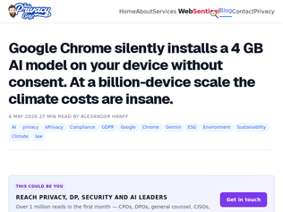
"https://archive.ph/vhTfm"
"Framing this as needing "consent" is deeply misguided. It's as silly as claiming that Microsoft Word installed an English language spellcheck dictionary without your consent. It's just part of the software. You consented to installing the software and having it autoupdate. That covers it.Now we can argue whether or not it's an appropriate amount of disk space or bandwidth to use, but that's just a reasonable practical discussion to have. Framing it around consent is unnecessarily inflammatory and makes it harder to have a discussion, not easier."
"If Chrome has the #optimization-guide-on-device-model and #prompt-api-for-gemini-nano flags enabled, either because it's part of some Origin Trial / Early Stable Release or something, then web pages will have access to the new Prompt API which allows any webpage to initiate the (one-time) download of the ~2.7 GiB CPU or ~4.0 GiB GPU model using LanguageModel.create()https://developer.chrome.com/docs/ai/prompt-apiWhen Chrome 148 releases tomorrow, this will be the default behaviour on desktop.To download, it should check for 22 GiB free disk space on the volume where your Chrome data dir is, and at least double the model size of free space in your tmp dir."
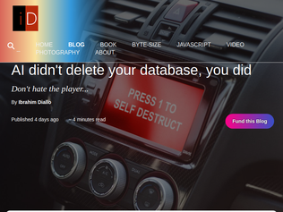
"I think the perspective here is completely wrong. The problem is that people are now building our world around tooling that eschews accountability.Over a decade ago now, I had a conversation with Gerald Sussman which had enormous influence on me: https://dustycloud.org/blog/sussman-on-ai/> At some point Sussman expressed how he thought AI was on the wrong track. He explained that he thought most AI directions were not interesting to him, because they were about building up a solid AI foundation, then the AI system runs as a sort of black box. "I'm not interested in that. I want software that's accountable." Accountable? "Yes, I want something that can express its symbolic reasoning. I want to it to tell me why it did the thing it did, what it thought was going to happen, and then what happened instead." He then said something that took me a long time to process, and at first I mistook for being very science-fiction'y, along the lines of, "If an AI driven car drives off the side of the road, I want to know why it did that. I could take the software developer to court, but I would much rather take the AI to court."Years later, I found out that Sussman's student Leilani Gilpin wrote a dissertation which explored exactly this topic. Her dissertation, "Anomaly Detection Through Explanations", explores a neural network talking to a propagator model to build a system that explains behavior. https://people.ucsc.edu/~lgilpin/publication/dissertation/There has been followup work in this direction, but more important than the particular direction of computation to me in this comment is that we recognize that it is perfectly reasonable to hold AI corporations to account. After all, they are making many assertions about systems that otherwise cannot be held accountable, so the best thing we can do in their stead is hold them accountable.But a much better path would be to not use systems which fail to have these properties, and expand work on systems which do."
"The article seems to assume that this company added an endpoint for deleting the database. My reading of the original article was that the cloud provider offers an API to manage their resources, which includes an API to delete a volume.The article proposes automation as the solution for such mistakes. But infrastructure automation tools like Terraform rely on the exact API that resulted in the database getting deleted.IMO the biggest mistakes were:1. Having an unrestricted API token accessible by AI. Apparently they were not aware that the token had that many permissions.2. No deletion protection on the production database volume.3. Deleting a volume immediately deletes all associated snapshots. Snapshot deletion should be delayed by default. I think AWS has the same unsafe default, but at least their support can restore the volume. https://alexeyondata.substack.com/p/how-i-dropped-our-produc...AI wasn't the main issue (though it grabbing tokens from random locations is rather scary). But automation isn't the answer either, a Terraform misconfiguration could have just as easily deleted the database.Their cloud provider needs to work on safe defaults (limited privileges and delayed snapshot deletion), and communicating more clearly (the user should notice they're creating an unrestricted token)."
"First, no matter what you do, if a human has write access to the production database, the database can be deleted.Second, there is a legitimate reason to destroy a database in development and automation. The biggest problem I see is often treating your development data like pets not cattle. You absolutely need to have safeguards that this cannot be run in production, but if a human has access to the credentials to run in production, the agent has access.So, then, what do we do? In a larger organization, we can depend on the dev/ops split to maintain this. For a solo developer, or a small team, it takes a lot more discipline. Even before AI, junior and even mid-level developers didn't have the knowledge to segment. And senior devs often got complacent because they thought they knew enough.They likely need some combination of https://www.cloudbees.com/blog/separate-aws-production-and-d..., introduction to terraform, introduction to GitHub actions, and some sort of vm where production credentials live (and AI doesn't!)But at that point you're past vibe coding. And from what I can tell, the successful vibe coders are quickly learning that they need to go past it pretty quickly with all these horror stories."
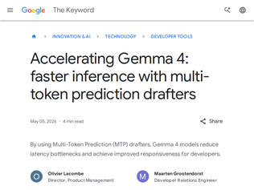
"Speculative decoding is an amazingly clever invention, almost seems-too-good-to-be-true (faster interference with zero degradation from the quality of the main model). The core idea is: if you can find a way to generate a small run of draft next tokens with a smaller model that have a reasonable likelihood of being correct, it's fast to check that they are actually correct with the main model because you can run the checks in parallel. And if you think about it, a lot of next tokens are pretty obvious in certain situations (e.g. it doesn't take a frontier model to guess the likely next token in "United States of...", and a lot of code is boilerplate and easy to predict from previous code sections).I always encourage folks who are interested in LLM internals to read up on speculative decoding (both the basic version and the more advanced MTP), and if you have time, try and implement your own version of it (writing the core without a coding agent, to begin with!)"
"I don't see it talked about much, but Gemma (and gemini) use enormously less tokens per output than other models, while still staying within arms reach of top benchmark performance.It's not uncommon to see a gemma vs qwen comparison, where qwen does a bit better, but spent 22 minutes on the task, while gemma aligned the buttons wrong, but only spent 4 minutes on the same prompt. So taken at face value, gemma is now under performing leading open models by 5-10%, but doing it in 1/10th the time."
"MTP support is being addedto llama.cpp, at least for the Qwen models ( https://github.com/ggml-org/llama.cpp/pull/20533) and I'd imagine Gemma 4 will come soon.The performance uplift on local/self-hosted models in both quality and speed has been amazing in the last few months."
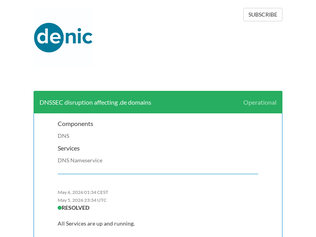
"It seems like DENIC has a problem again. My domain elektro-menne.de is down. I've been debugging this issue for more than an hour, and it seems like the domain exists in WHOIS and Cloudflare responds correctly when queried directly, but DENIC authoritative nameservers return NXDOMAIN.For example:dig @a.nic.de elektro-menne.de Areturns NXDOMAIN directly from DENIC.Zonemaster also reports: "elektro-menne.de does not exist as a DNS zone."I also found multiple other .de domains currently affected by the exact same issue. Looks like the domains are present in WHOIS, but missing from the live .de DNS zone delegation."
"Apparently the DENIC team was on a party this evening! Party hard, but not too hard. https://bsky.app/profile/denic.de/post/3ml4r2lvcjg2h"
"Cloudflare has now disabled DNSSEC validation on their 1.1.1.1 resolver: https://www.cloudflarestatus.com/incidents/vjrk8c8w37lz"


Removing the modem and GPS from my 2024 RAV4 hybrid
"> Even after the modem is removed, if you connect your phone to the car via Bluetooth then the car will use your phone as an internet connection and send all the same telemetry data back to Toyota. However, if you use a wired USB connection then it does not do that (see the discussion here and elsewhere), so I exclusively use CarPlay via USB.The problem with this is that both carplay and android auto capture their own vehicle telemetry. So even though the car is not able to use your phone as a general data pipe, Google and Apple still get access to this data when you're connected.They are both very cagey with how they talk about this (or don't)."
"Does anyone have any details on this claim? Important: Even after the modem is removed, if you connect your phone to the car via Bluetooth then the car will use your phone as an internet connection and send all the same telemetry data back to Toyota. However, if you use a wired USB connection then it does not do that (see the discussion here and elsewhere), so I exclusively use CarPlay via USB. I wish I had a way to completely disable the car’s Bluetooth functionality, but it’s deeply integrated into the head unit. How can data via Bluetooth be routed to an active internet connection? I assume this would only work if you have the manufacturer's car application installed on your phone.Following the thread linked to, the only thing I can find is very unsubstantiated; https://www.rav4world.com/threads/2019-rav4-dcm-deactivate-p... : One caveat, if you use bluetooth to connect your phone to the car DCM will use your phone to connect to the mother ship and presumably send your data. I only use my iPhone cable to connect to the car which does not have this effect. This sounds like pure speculation, and I would love to hear if there is any information that can substantiate what they are claiming."
"I have the same car and want to do this, but not for the reasons the author noted but because the GPS unit in the car is broken when paired with Carplay and has the wrong compass heading causing navigation to be completely useless.I have reported this to Toyota multiple times with videos detailing the problem and they have denied the problem and ultimately when faced with the evidence simply refused to fix it.I've been a big fan of Toyota's Production System and their management culture, but this experience has really diminished the brand for me. I realize these problems exist with all cars today. The pattern seems to be to foist low-quality hardware and software on their customers and take no responsibility for the results. Software bugs aren't what they consider a "typical car problem" so they simply don't fix them."